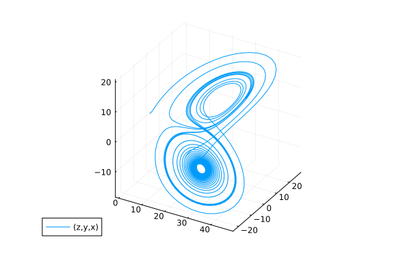
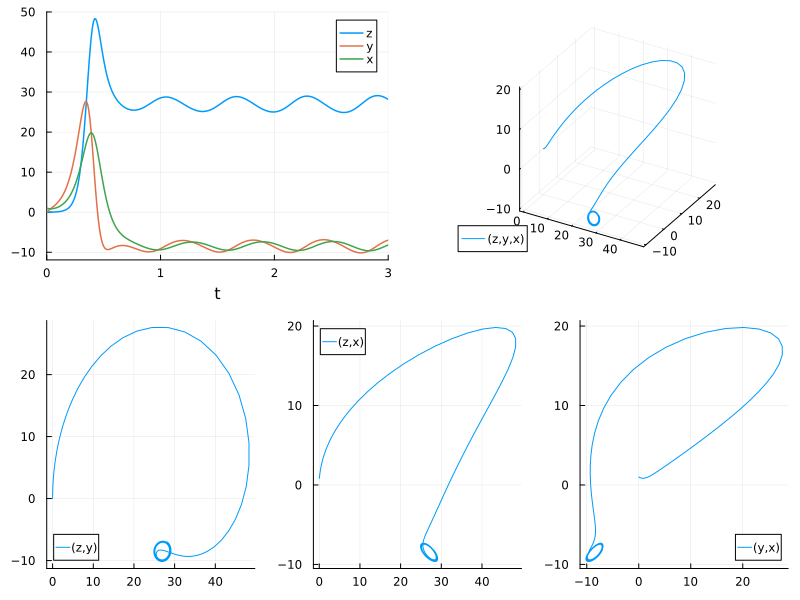
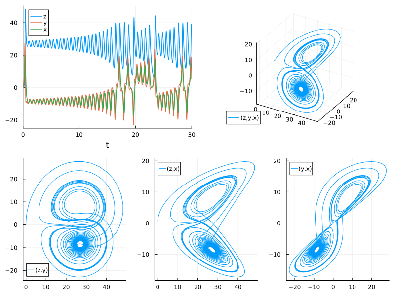

Lorenz Parameter Estimation Benchmarks
Estimate the parameters of the Lorenz system from the dataset
Note: If data is generated with a fixed time step method and then is tested against with the same time step, there is a bias introduced since it's no longer about hitting the true solution, rather it's just about retrieving the same values that the ODE was first generated by! Thus this version uses adaptive timestepping for all portions so that way tests are against the true solution.
using ParameterizedFunctions, OrdinaryDiffEq, DiffEqParamEstim, Optimization
using OptimizationBBO, OptimizationNLopt, Plots, ForwardDiff, BenchmarkTools
using ModelingToolkit
using ModelingToolkitBase
using SciCompDSL
using ModelingToolkit: @mtkbuild, D_nounits as D, t_nounits as t
gr(fmt = :png)Plots.GRBackend()Xiang2015Bounds = Tuple{Float64, Float64}[(9, 11), (20, 30), (
2, 3)] # for local optimizations
xlow_bounds = [9.0, 20.0, 2.0]
xhigh_bounds = [11.0, 30.0, 3.0]
LooserBounds = Tuple{Float64, Float64}[(0, 22), (0, 60), (
0, 6)] # for global optimization
GloIniPar = [0.0, 0.5, 0.1] # for global optimizations
LocIniPar = [9.0, 20.0, 2.0] # for local optimization3-element Vector{Float64}:
9.0
20.0
2.0@mtkmodel LorenzExample begin
@parameters begin
σ = 10.0 # Parameter: Prandtl number
ρ = 28.0 # Parameter: Rayleigh number
β = 8/3 # Parameter: Geometric factor
end
@variables begin
x(t) = 1.0 # Initial condition for x
y(t) = 1.0 # Initial condition for y
z(t) = 1.0 # Initial condition for z
end
@equations begin
D(x) ~ σ * (y - x)
D(y) ~ x * (ρ - z) - y
D(z) ~ x * y - β * z
end
end
@mtkbuild g1 = LorenzExample()
p = [10.0, 28.0, 2.66] # Parameters used to construct the dataset
r0 = [1.0; 0.0; 0.0] #[-11.8,-5.1,37.5] PODES Initial values of the system in space # [0.1, 0.0, 0.0]
# unknowns(g1) is ordered [z, y, x] rather than in declaration order, so the
# initial condition and parameters are keyed by name instead of positionally.
varmap = merge(Dict([g1.x, g1.y, g1.z] .=> r0), Dict([g1.σ, g1.ρ, g1.β] .=> p))
tspan = (0.0, 30.0) # PODES sample of 3000 observations over the (0,30) timespan
prob = ODEProblem(g1, varmap, tspan)
tspan2 = (0.0, 3.0) # Xiang test sample of 300 observations with a timestep of 0.01
prob_short = ODEProblem(g1, varmap, tspan2)ODEProblem with uType Vector{Float64} and tType Float64. In-place: true
Initialization status: FULLY_DETERMINED
Non-trivial mass matrix: false
timespan: (0.0, 3.0)
u0: 3-element Vector{Float64}:
0.0
0.0
1.0dt = 30.0/3000
tf = 30.0
tinterval = 0:dt:tf
time_points = collect(tinterval)3001-element Vector{Float64}:
0.0
0.01
0.02
0.03
0.04
0.05
0.06
0.07
0.08
0.09
⋮
29.92
29.93
29.94
29.95
29.96
29.97
29.98
29.99
30.0h = 0.01
M = 300
tstart = 0.0
tstop = tstart + M * h
tinterval_short = 0:h:tstop
t_short = collect(tinterval_short)301-element Vector{Float64}:
0.0
0.01
0.02
0.03
0.04
0.05
0.06
0.07
0.08
0.09
⋮
2.92
2.93
2.94
2.95
2.96
2.97
2.98
2.99
3.0# Generate Data
data_sol_short = solve(prob_short, Vern9(), saveat = t_short, reltol = 1e-9, abstol = 1e-9)
data_short = convert(Array, data_sol_short) # This operation produces column major dataset obs as columns, equations as rows
data_sol = solve(prob, Vern9(), saveat = time_points, reltol = 1e-9, abstol = 1e-9)
data = convert(Array, data_sol)3×3001 Matrix{Float64}:
0.0 0.00126393 0.00465567 0.00983655 … 39.19 39.1699 38.904
0.0 0.26634 0.51174 0.744654 8.31875 6.7199 5.22868
1.0 0.917924 0.867919 0.84536 13.8987 13.2896 12.5913Plot the data
plot(data_sol_short, vars = (1, 2, 3)) # the short solution
plot(data_sol, vars = (1, 2, 3)) # the longer solution
interpolation_sol = solve(prob, Vern7(), saveat = time_points, reltol = 1e-12, abstol = 1e-12)
plot(interpolation_sol, vars = (1, 2, 3))
xyzt = plot(data_sol_short, plotdensity = 10000, lw = 1.5)
xy = plot(data_sol_short, plotdensity = 10000, vars = (1, 2))
xz = plot(data_sol_short, plotdensity = 10000, vars = (1, 3))
yz = plot(data_sol_short, plotdensity = 10000, vars = (2, 3))
xyz = plot(data_sol_short, plotdensity = 10000, vars = (1, 2, 3))
plot(plot(xyzt, xyz), plot(xy, xz, yz, layout = (1, 3), w = 1), layout = (2, 1), size = (
800, 600))
xyzt = plot(data_sol, plotdensity = 10000, lw = 1.5)
xy = plot(data_sol, plotdensity = 10000, vars = (1, 2))
xz = plot(data_sol, plotdensity = 10000, vars = (1, 3))
yz = plot(data_sol, plotdensity = 10000, vars = (2, 3))
xyz = plot(data_sol, plotdensity = 10000, vars = (1, 2, 3))
plot(plot(xyzt, xyz), plot(xy, xz, yz, layout = (1, 3), w = 1), layout = (2, 1), size = (
800, 600))
Find a local solution for the three parameters from a short data set
obj_short = build_loss_objective(prob_short, Tsit5(), L2Loss(t_short, data_short), tstops = t_short)
optprob = OptimizationProblem(obj_short, LocIniPar, lb = xlow_bounds, ub = xhigh_bounds)
short_solutions = Dict{String, Any}()
res1 = @btime solve(optprob, BBO_adaptive_de_rand_1_bin(), maxiters = 7e3)
short_solutions["BBO (Tsit5 default tol)"] = res13.104 s (21422265 allocations: 810.09 MiB)
retcode: MaxIters
u: 3-element Vector{Float64}:
9.99999958167166
28.000000184610723
2.6599999509502785obj_short = build_loss_objective(
prob_short, Tsit5(), L2Loss(t_short, data_short), tstops = t_short, reltol = 1e-9)
optprob = OptimizationProblem(obj_short, LocIniPar, lb = xlow_bounds, ub = xhigh_bounds)
res1 = @btime solve(optprob, BBO_adaptive_de_rand_1_bin(), maxiters = 7e3)
short_solutions["BBO (Tsit5 reltol=1e-9)"] = res14.555 s (33941941 allocations: 1002.75 MiB)
retcode: MaxIters
u: 3-element Vector{Float64}:
9.999999950185428
28.00000001810664
2.6599999942497954obj_short = build_loss_objective(prob_short, Vern9(), L2Loss(t_short, data_short),
tstops = t_short, reltol = 1e-9, abstol = 1e-9)
optprob = OptimizationProblem(obj_short, LocIniPar, lb = xlow_bounds, ub = xhigh_bounds)
res1 = @btime solve(optprob, BBO_adaptive_de_rand_1_bin(), maxiters = 7e3)
short_solutions["BBO (Vern9 1e-9)"] = res14.896 s (42398262 allocations: 1.11 GiB)
retcode: MaxIters
u: 3-element Vector{Float64}:
10.000000015152246
27.999999997843137
2.659999966370605Using NLopt
First, the global optimization algorithms
obj_short = build_loss_objective(prob_short, Vern9(), L2Loss(t_short, data_short),
Optimization.AutoForwardDiff(), tstops = t_short, reltol = 1e-9, abstol = 1e-9)SciMLBase.OptimizationFunction{true, ADTypes.AutoForwardDiff{nothing, Nothi
ng}, DiffEqParamEstim.var"#37#38"{Nothing, typeof(DiffEqParamEstim.STANDARD
_PROB_GENERATOR), Base.Pairs{Symbol, Any, Nothing, @NamedTuple{tstops::Vect
or{Float64}, reltol::Float64, abstol::Float64}}, SciMLBase.ODEProblem{Vecto
r{Float64}, Tuple{Float64, Float64}, true, ModelingToolkitBase.MTKParameter
s{Vector{Float64}, Vector{Float64}, Tuple{}, Tuple{}, Tuple{}, Tuple{}}, Sc
iMLBase.ODEFunction{true, SciMLBase.AutoDespecialize, ModelingToolkitBase.G
eneratedFunctionWrapper{Tuple{2, 3, true}, RuntimeGeneratedFunctions.Runtim
eGeneratedFunction{(:___mtkunknowns___, :___mtkparameters___, :__argₛᵧₘ1296
8198168038750593), ModelingToolkitBase.var"#_RGF_ModTag", ModelingToolkitBa
se.var"#_RGF_ModTag", (0xef05dfea, 0xbf0f5a9f, 0x987e0f45, 0x8d1ed9b8, 0x33
4d458b), Nothing}, RuntimeGeneratedFunctions.RuntimeGeneratedFunction{(:__a
rgₛᵧₘ1401282876548370056, :___mtkunknowns___, :___mtkparameters___, :__argₛ
ᵧₘ12968198168038750593), ModelingToolkitBase.var"#_RGF_ModTag", ModelingToo
lkitBase.var"#_RGF_ModTag", (0x62ee0678, 0xa187627b, 0x2814c1fa, 0xbb69d703
, 0x3a47543e), Nothing}}, LinearAlgebra.UniformScaling{Bool}, Nothing, Noth
ing, Nothing, Nothing, Nothing, Nothing, Nothing, Nothing, Nothing, Nothing
, Nothing, Nothing, ModelingToolkitBase.ObservedFunctionCache{ModelingToolk
itBase.System, Nothing}, Nothing, ModelingToolkitBase.System, Union{Nothing
, SciMLBase.OverrideInitData}, Union{Nothing, SciMLBase.ODENLStepData}}, Ba
se.Pairs{Symbol, Union{}, Nothing, @NamedTuple{}}, SciMLBase.StandardODEPro
blem}, OrdinaryDiffEqVerner.Vern9{typeof(OrdinaryDiffEqCore.trivial_limiter
!), typeof(OrdinaryDiffEqCore.trivial_limiter!), FastBroadcast.Serial, Val{
true}}, DiffEqParamEstim.L2Loss{Vector{Float64}, Matrix{Float64}, Nothing,
Nothing, Nothing, Nothing}, Nothing, Tuple{}}, Nothing, Nothing, Nothing, N
othing, Nothing, Nothing, Nothing, Nothing, Nothing, Nothing, Nothing, Noth
ing, Nothing, typeof(SciMLBase.DEFAULT_OBSERVED_NO_TIME), Nothing, Nothing,
Nothing, Nothing, Nothing, Nothing, Nothing, Nothing, Nothing, Nothing}(Di
ffEqParamEstim.var"#37#38"{Nothing, typeof(DiffEqParamEstim.STANDARD_PROB_G
ENERATOR), Base.Pairs{Symbol, Any, Nothing, @NamedTuple{tstops::Vector{Floa
t64}, reltol::Float64, abstol::Float64}}, SciMLBase.ODEProblem{Vector{Float
64}, Tuple{Float64, Float64}, true, ModelingToolkitBase.MTKParameters{Vecto
r{Float64}, Vector{Float64}, Tuple{}, Tuple{}, Tuple{}, Tuple{}}, SciMLBase
.ODEFunction{true, SciMLBase.AutoDespecialize, ModelingToolkitBase.Generate
dFunctionWrapper{Tuple{2, 3, true}, RuntimeGeneratedFunctions.RuntimeGenera
tedFunction{(:___mtkunknowns___, :___mtkparameters___, :__argₛᵧₘ12968198168
038750593), ModelingToolkitBase.var"#_RGF_ModTag", ModelingToolkitBase.var"
#_RGF_ModTag", (0xef05dfea, 0xbf0f5a9f, 0x987e0f45, 0x8d1ed9b8, 0x334d458b)
, Nothing}, RuntimeGeneratedFunctions.RuntimeGeneratedFunction{(:__argₛᵧₘ14
01282876548370056, :___mtkunknowns___, :___mtkparameters___, :__argₛᵧₘ12968
198168038750593), ModelingToolkitBase.var"#_RGF_ModTag", ModelingToolkitBas
e.var"#_RGF_ModTag", (0x62ee0678, 0xa187627b, 0x2814c1fa, 0xbb69d703, 0x3a4
7543e), Nothing}}, LinearAlgebra.UniformScaling{Bool}, Nothing, Nothing, No
thing, Nothing, Nothing, Nothing, Nothing, Nothing, Nothing, Nothing, Nothi
ng, Nothing, ModelingToolkitBase.ObservedFunctionCache{ModelingToolkitBase.
System, Nothing}, Nothing, ModelingToolkitBase.System, Union{Nothing, SciML
Base.OverrideInitData}, Union{Nothing, SciMLBase.ODENLStepData}}, Base.Pair
s{Symbol, Union{}, Nothing, @NamedTuple{}}, SciMLBase.StandardODEProblem},
OrdinaryDiffEqVerner.Vern9{typeof(OrdinaryDiffEqCore.trivial_limiter!), typ
eof(OrdinaryDiffEqCore.trivial_limiter!), FastBroadcast.Serial, Val{true}},
DiffEqParamEstim.L2Loss{Vector{Float64}, Matrix{Float64}, Nothing, Nothing
, Nothing, Nothing}, Nothing, Tuple{}}(nothing, DiffEqParamEstim.STANDARD_P
ROB_GENERATOR, Base.Pairs{Symbol, Any, Nothing, @NamedTuple{tstops::Vector{
Float64}, reltol::Float64, abstol::Float64}}(:tstops => [0.0, 0.01, 0.02, 0
.03, 0.04, 0.05, 0.06, 0.07, 0.08, 0.09 … 2.91, 2.92, 2.93, 2.94, 2.95, 2
.96, 2.97, 2.98, 2.99, 3.0], :reltol => 1.0e-9, :abstol => 1.0e-9), SciMLBa
se.ODEProblem{Vector{Float64}, Tuple{Float64, Float64}, true, ModelingToolk
itBase.MTKParameters{Vector{Float64}, Vector{Float64}, Tuple{}, Tuple{}, Tu
ple{}, Tuple{}}, SciMLBase.ODEFunction{true, SciMLBase.AutoDespecialize, Mo
delingToolkitBase.GeneratedFunctionWrapper{Tuple{2, 3, true}, RuntimeGenera
tedFunctions.RuntimeGeneratedFunction{(:___mtkunknowns___, :___mtkparameter
s___, :__argₛᵧₘ12968198168038750593), ModelingToolkitBase.var"#_RGF_ModTag"
, ModelingToolkitBase.var"#_RGF_ModTag", (0xef05dfea, 0xbf0f5a9f, 0x987e0f4
5, 0x8d1ed9b8, 0x334d458b), Nothing}, RuntimeGeneratedFunctions.RuntimeGene
ratedFunction{(:__argₛᵧₘ1401282876548370056, :___mtkunknowns___, :___mtkpar
ameters___, :__argₛᵧₘ12968198168038750593), ModelingToolkitBase.var"#_RGF_M
odTag", ModelingToolkitBase.var"#_RGF_ModTag", (0x62ee0678, 0xa187627b, 0x2
814c1fa, 0xbb69d703, 0x3a47543e), Nothing}}, LinearAlgebra.UniformScaling{B
ool}, Nothing, Nothing, Nothing, Nothing, Nothing, Nothing, Nothing, Nothin
g, Nothing, Nothing, Nothing, Nothing, ModelingToolkitBase.ObservedFunction
Cache{ModelingToolkitBase.System, Nothing}, Nothing, ModelingToolkitBase.Sy
stem, Union{Nothing, SciMLBase.OverrideInitData}, Union{Nothing, SciMLBase.
ODENLStepData}}, Base.Pairs{Symbol, Union{}, Nothing, @NamedTuple{}}, SciML
Base.StandardODEProblem}(SciMLBase.ODEFunction{true, SciMLBase.AutoDespecia
lize, ModelingToolkitBase.GeneratedFunctionWrapper{Tuple{2, 3, true}, Runti
meGeneratedFunctions.RuntimeGeneratedFunction{(:___mtkunknowns___, :___mtkp
arameters___, :__argₛᵧₘ12968198168038750593), ModelingToolkitBase.var"#_RGF
_ModTag", ModelingToolkitBase.var"#_RGF_ModTag", (0xef05dfea, 0xbf0f5a9f, 0
x987e0f45, 0x8d1ed9b8, 0x334d458b), Nothing}, RuntimeGeneratedFunctions.Run
timeGeneratedFunction{(:__argₛᵧₘ1401282876548370056, :___mtkunknowns___, :_
__mtkparameters___, :__argₛᵧₘ12968198168038750593), ModelingToolkitBase.var
"#_RGF_ModTag", ModelingToolkitBase.var"#_RGF_ModTag", (0x62ee0678, 0xa1876
27b, 0x2814c1fa, 0xbb69d703, 0x3a47543e), Nothing}}, LinearAlgebra.UniformS
caling{Bool}, Nothing, Nothing, Nothing, Nothing, Nothing, Nothing, Nothing
, Nothing, Nothing, Nothing, Nothing, Nothing, ModelingToolkitBase.Observed
FunctionCache{ModelingToolkitBase.System, Nothing}, Nothing, ModelingToolki
tBase.System, Union{Nothing, SciMLBase.OverrideInitData}, Union{Nothing, Sc
iMLBase.ODENLStepData}}(ModelingToolkitBase.GeneratedFunctionWrapper{Tuple{
2, 3, true}, RuntimeGeneratedFunctions.RuntimeGeneratedFunction{(:___mtkunk
nowns___, :___mtkparameters___, :__argₛᵧₘ12968198168038750593), ModelingToo
lkitBase.var"#_RGF_ModTag", ModelingToolkitBase.var"#_RGF_ModTag", (0xef05d
fea, 0xbf0f5a9f, 0x987e0f45, 0x8d1ed9b8, 0x334d458b), Nothing}, RuntimeGene
ratedFunctions.RuntimeGeneratedFunction{(:__argₛᵧₘ1401282876548370056, :___
mtkunknowns___, :___mtkparameters___, :__argₛᵧₘ12968198168038750593), Model
ingToolkitBase.var"#_RGF_ModTag", ModelingToolkitBase.var"#_RGF_ModTag", (0
x62ee0678, 0xa187627b, 0x2814c1fa, 0xbb69d703, 0x3a47543e), Nothing}}(Runti
meGeneratedFunctions.RuntimeGeneratedFunction{(:___mtkunknowns___, :___mtkp
arameters___, :__argₛᵧₘ12968198168038750593), ModelingToolkitBase.var"#_RGF
_ModTag", ModelingToolkitBase.var"#_RGF_ModTag", (0xef05dfea, 0xbf0f5a9f, 0
x987e0f45, 0x8d1ed9b8, 0x334d458b), Nothing}(nothing), RuntimeGeneratedFunc
tions.RuntimeGeneratedFunction{(:__argₛᵧₘ1401282876548370056, :___mtkunknow
ns___, :___mtkparameters___, :__argₛᵧₘ12968198168038750593), ModelingToolki
tBase.var"#_RGF_ModTag", ModelingToolkitBase.var"#_RGF_ModTag", (0x62ee0678
, 0xa187627b, 0x2814c1fa, 0xbb69d703, 0x3a47543e), Nothing}(nothing)), Line
arAlgebra.UniformScaling{Bool}(true), nothing, nothing, nothing, nothing, n
othing, nothing, nothing, nothing, nothing, nothing, nothing, nothing, Mode
lingToolkitBase.ObservedFunctionCache{ModelingToolkitBase.System, Nothing}(
Model g1:
Equations (3):
3 standard: see equations(g1)
Unknowns (3): see unknowns(g1)
z(t)
y(t)
x(t)
Parameters (3): see parameters(g1)
σ
ρ
β, Dict{Any, Any}(), false, false, ModelingToolkitBase, false, nothing),
nothing, Model g1:
Equations (3):
3 standard: see equations(g1)
Unknowns (3): see unknowns(g1)
z(t)
y(t)
x(t)
Parameters (3): see parameters(g1)
σ
ρ
β, SciMLBase.OverrideInitData{SciMLBase.NonlinearProblem{Nothing, true, M
odelingToolkitBase.MTKParameters{Vector{Float64}, StaticArraysCore.SVector{
0, Float64}, Tuple{}, Tuple{}, Tuple{}, Tuple{}}, SciMLBase.NonlinearFuncti
on{true, SciMLBase.AutoDespecialize, ModelingToolkitBase.GeneratedFunctionW
rapper{Tuple{2, 2, true}, RuntimeGeneratedFunctions.RuntimeGeneratedFunctio
n{(:___mtkunknowns___, :___mtkparameters___), ModelingToolkitBase.var"#_RGF
_ModTag", ModelingToolkitBase.var"#_RGF_ModTag", (0xe0a7f55e, 0xcb0f8c13, 0
x5afbe72e, 0x825c4ce9, 0x3418c4a5), Nothing}, RuntimeGeneratedFunctions.Run
timeGeneratedFunction{(:__argₛᵧₘ1401282876548370056, :___mtkunknowns___, :_
__mtkparameters___), ModelingToolkitBase.var"#_RGF_ModTag", ModelingToolkit
Base.var"#_RGF_ModTag", (0xac9dd6f8, 0xf3d8414c, 0x01f2cade, 0x451b4ee8, 0x
29c649f2), Nothing}}, LinearAlgebra.UniformScaling{Bool}, Nothing, Nothing,
Nothing, Nothing, Nothing, Nothing, Nothing, Nothing, Nothing, Nothing, Mo
delingToolkitBase.ObservedFunctionCache{ModelingToolkitBase.System, Nothing
}, Nothing, ModelingToolkitBase.System, Nothing, Nothing}, Base.Pairs{Symbo
l, Union{}, Nothing, @NamedTuple{}}, SciMLBase.StandardNonlinearProblem, No
thing, Nothing}, typeof(ModelingToolkitBase.update_initializeprob!), Modeli
ngToolkitBase.InitializationMap{true, typeof(identity), ModelingToolkitBase
.PromoteToTunableEltype{ModelingToolkitBase.CopyParamsByTemplate{true, Tupl
e{ModelingToolkitBase.ParameterIndex{SciMLStructures.Tunable, UnitRange{Int
64}}, ModelingToolkitBase.ParameterIndex{SciMLStructures.Tunable, UnitRange
{Int64}}}, 1, Nothing}, Float64}}, ModelingToolkitBase.var"#initprobpmap_sp
lit#770"{ModelingToolkitBase.MTKParametersReconstructor{ComposedFunction{Mo
delingToolkitBase.PConstructorApplicator{typeof(identity)}, ModelingToolkit
Base.CopyParamsByTemplate{true, Tuple{ModelingToolkitBase.ParameterIndex{Sc
iMLStructures.Tunable, UnitRange{Int64}}}, 1, Nothing}}, ComposedFunction{M
odelingToolkitBase.PConstructorApplicator{typeof(identity)}, ModelingToolki
tBase.CopyParamsByTemplate{true, Tuple{ModelingToolkitBase.ParameterIndex{S
ciMLStructures.Tunable, UnitRange{Int64}}}, 1, Nothing}}, Returns{Tuple{}},
Returns{Tuple{}}, Returns{Tuple{}}}}, ModelingToolkitBase.InitializationMe
tadata{ModelingToolkitBase.ReconstructInitializeprob{ModelingToolkitBase.MT
KParametersReconstructor{ComposedFunction{ModelingToolkitBase.PConstructorA
pplicator{typeof(identity)}, ModelingToolkitBase.CopyParamsByTemplate{true,
Tuple{ModelingToolkitBase.IndepVarTemplate, ModelingToolkitBase.ParameterI
ndex{SciMLStructures.Tunable, UnitRange{Int64}}, ModelingToolkitBase.Parame
terIndex{SciMLStructures.Initials, UnitRange{Int64}}}, 1, Nothing}}, Return
s{StaticArraysCore.SVector{0, Float64}}, Returns{Tuple{}}, Returns{Tuple{}}
, Returns{Tuple{}}}, ComposedFunction{typeof(identity), ModelingToolkitBase
.ObservedWrapper{true, ModelingToolkitBase.GeneratedFunctionWrapper{Tuple{2
, 3, true}, RuntimeGeneratedFunctions.RuntimeGeneratedFunction{(:__mtk_arg_
1, :___mtkparameters___, :__argₛᵧₘ12968198168038750593), ModelingToolkitBas
e.var"#_RGF_ModTag", ModelingToolkitBase.var"#_RGF_ModTag", (0x05e7e591, 0x
9a09c886, 0x0267af3f, 0x585cfe8b, 0x75f79d7b), Nothing}, RuntimeGeneratedFu
nctions.RuntimeGeneratedFunction{(:x1, :x2, :x3, :x4), ModelingToolkitBase.
var"#_RGF_ModTag", ModelingToolkitBase.var"#_RGF_ModTag", (0xb896e553, 0xa1
18fcf5, 0xbfeb9719, 0xa096e58a, 0x357542a4), Nothing}}}}}, ModelingToolkitB
ase.GetUpdatedU0{Nothing, SymbolicIndexingInterface.MultipleParametersGette
r{SymbolicIndexingInterface.IndexerNotTimeseries, Vector{SymbolicIndexingIn
terface.GetParameterIndex{ModelingToolkitBase.ParameterIndex{SciMLStructure
s.Initials, Int64}}}, Nothing}}, ModelingToolkitBase.SetInitialUnknowns{Sym
bolicIndexingInterface.MultipleSetters{Vector{SymbolicIndexingInterface.Par
ameterHookWrapper{SymbolicIndexingInterface.SetParameterIndex{ModelingToolk
itBase.ParameterIndex{SciMLStructures.Initials, Int64}}, SymbolicUtils.Basi
cSymbolicImpl.var"typeof(BasicSymbolicImpl)"{SymbolicUtils.SymReal}}}}}}, V
al{true}}(SciMLBase.NonlinearProblem{Nothing, true, ModelingToolkitBase.MTK
Parameters{Vector{Float64}, StaticArraysCore.SVector{0, Float64}, Tuple{},
Tuple{}, Tuple{}, Tuple{}}, SciMLBase.NonlinearFunction{true, SciMLBase.Aut
oDespecialize, ModelingToolkitBase.GeneratedFunctionWrapper{Tuple{2, 2, tru
e}, RuntimeGeneratedFunctions.RuntimeGeneratedFunction{(:___mtkunknowns___,
:___mtkparameters___), ModelingToolkitBase.var"#_RGF_ModTag", ModelingTool
kitBase.var"#_RGF_ModTag", (0xe0a7f55e, 0xcb0f8c13, 0x5afbe72e, 0x825c4ce9,
0x3418c4a5), Nothing}, RuntimeGeneratedFunctions.RuntimeGeneratedFunction{
(:__argₛᵧₘ1401282876548370056, :___mtkunknowns___, :___mtkparameters___), M
odelingToolkitBase.var"#_RGF_ModTag", ModelingToolkitBase.var"#_RGF_ModTag"
, (0xac9dd6f8, 0xf3d8414c, 0x01f2cade, 0x451b4ee8, 0x29c649f2), Nothing}},
LinearAlgebra.UniformScaling{Bool}, Nothing, Nothing, Nothing, Nothing, Not
hing, Nothing, Nothing, Nothing, Nothing, Nothing, ModelingToolkitBase.Obse
rvedFunctionCache{ModelingToolkitBase.System, Nothing}, Nothing, ModelingTo
olkitBase.System, Nothing, Nothing}, Base.Pairs{Symbol, Union{}, Nothing, @
NamedTuple{}}, SciMLBase.StandardNonlinearProblem, Nothing, Nothing}(SciMLB
ase.NonlinearFunction{true, SciMLBase.AutoDespecialize, ModelingToolkitBase
.GeneratedFunctionWrapper{Tuple{2, 2, true}, RuntimeGeneratedFunctions.Runt
imeGeneratedFunction{(:___mtkunknowns___, :___mtkparameters___), ModelingTo
olkitBase.var"#_RGF_ModTag", ModelingToolkitBase.var"#_RGF_ModTag", (0xe0a7
f55e, 0xcb0f8c13, 0x5afbe72e, 0x825c4ce9, 0x3418c4a5), Nothing}, RuntimeGen
eratedFunctions.RuntimeGeneratedFunction{(:__argₛᵧₘ1401282876548370056, :__
_mtkunknowns___, :___mtkparameters___), ModelingToolkitBase.var"#_RGF_ModTa
g", ModelingToolkitBase.var"#_RGF_ModTag", (0xac9dd6f8, 0xf3d8414c, 0x01f2c
ade, 0x451b4ee8, 0x29c649f2), Nothing}}, LinearAlgebra.UniformScaling{Bool}
, Nothing, Nothing, Nothing, Nothing, Nothing, Nothing, Nothing, Nothing, N
othing, Nothing, ModelingToolkitBase.ObservedFunctionCache{ModelingToolkitB
ase.System, Nothing}, Nothing, ModelingToolkitBase.System, Nothing, Nothing
}(ModelingToolkitBase.GeneratedFunctionWrapper{Tuple{2, 2, true}, RuntimeGe
neratedFunctions.RuntimeGeneratedFunction{(:___mtkunknowns___, :___mtkparam
eters___), ModelingToolkitBase.var"#_RGF_ModTag", ModelingToolkitBase.var"#
_RGF_ModTag", (0xe0a7f55e, 0xcb0f8c13, 0x5afbe72e, 0x825c4ce9, 0x3418c4a5),
Nothing}, RuntimeGeneratedFunctions.RuntimeGeneratedFunction{(:__argₛᵧₘ140
1282876548370056, :___mtkunknowns___, :___mtkparameters___), ModelingToolki
tBase.var"#_RGF_ModTag", ModelingToolkitBase.var"#_RGF_ModTag", (0xac9dd6f8
, 0xf3d8414c, 0x01f2cade, 0x451b4ee8, 0x29c649f2), Nothing}}(RuntimeGenerat
edFunctions.RuntimeGeneratedFunction{(:___mtkunknowns___, :___mtkparameters
___), ModelingToolkitBase.var"#_RGF_ModTag", ModelingToolkitBase.var"#_RGF_
ModTag", (0xe0a7f55e, 0xcb0f8c13, 0x5afbe72e, 0x825c4ce9, 0x3418c4a5), Noth
ing}(nothing), RuntimeGeneratedFunctions.RuntimeGeneratedFunction{(:__argₛᵧ
ₘ1401282876548370056, :___mtkunknowns___, :___mtkparameters___), ModelingTo
olkitBase.var"#_RGF_ModTag", ModelingToolkitBase.var"#_RGF_ModTag", (0xac9d
d6f8, 0xf3d8414c, 0x01f2cade, 0x451b4ee8, 0x29c649f2), Nothing}(nothing)),
LinearAlgebra.UniformScaling{Bool}(true), nothing, nothing, nothing, nothin
g, nothing, nothing, nothing, nothing, nothing, nothing, ModelingToolkitBas
e.ObservedFunctionCache{ModelingToolkitBase.System, Nothing}(Model g1:
Parameters (10): see parameters(g1)
t
σ
ρ
β
⋮
Observed (6): see observed(g1), Dict{Any, Any}(), false, false, ModelingToo
lkitBase, false, nothing), nothing, Model g1:
Parameters (10): see parameters(g1)
t
σ
ρ
β
⋮
Observed (6): see observed(g1), nothing, nothing), nothing, ModelingToolkit
Base.MTKParameters{Vector{Float64}, StaticArraysCore.SVector{0, Float64}, T
uple{}, Tuple{}, Tuple{}, Tuple{}}([0.0, 10.0, 28.0, 2.66, 0.0, 0.0, 0.0, 0
.0, 1.0, 0.0], Float64[], (), (), (), ()), SciMLBase.StandardNonlinearProbl
em(), nothing, nothing, Base.Pairs{Symbol, Union{}, Nothing, @NamedTuple{}}
()), ModelingToolkitBase.update_initializeprob!, ModelingToolkitBase.Initia
lizationMap{true, typeof(identity), ModelingToolkitBase.PromoteToTunableElt
ype{ModelingToolkitBase.CopyParamsByTemplate{true, Tuple{ModelingToolkitBas
e.ParameterIndex{SciMLStructures.Tunable, UnitRange{Int64}}, ModelingToolki
tBase.ParameterIndex{SciMLStructures.Tunable, UnitRange{Int64}}}, 1, Nothin
g}, Float64}}(identity, ModelingToolkitBase.PromoteToTunableEltype{Modeling
ToolkitBase.CopyParamsByTemplate{true, Tuple{ModelingToolkitBase.ParameterI
ndex{SciMLStructures.Tunable, UnitRange{Int64}}, ModelingToolkitBase.Parame
terIndex{SciMLStructures.Tunable, UnitRange{Int64}}}, 1, Nothing}, Float64}
(ModelingToolkitBase.CopyParamsByTemplate{true, Tuple{ModelingToolkitBase.P
arameterIndex{SciMLStructures.Tunable, UnitRange{Int64}}, ModelingToolkitBa
se.ParameterIndex{SciMLStructures.Tunable, UnitRange{Int64}}}, 1, Nothing}(
(ModelingToolkitBase.ParameterIndex{SciMLStructures.Tunable, UnitRange{Int6
4}}(SciMLStructures.Tunable(), 6:6, false), ModelingToolkitBase.ParameterIn
dex{SciMLStructures.Tunable, UnitRange{Int64}}(SciMLStructures.Tunable(), 8
:9, false)), (3,), nothing))), ModelingToolkitBase.var"#initprobpmap_split#
770"{ModelingToolkitBase.MTKParametersReconstructor{ComposedFunction{Modeli
ngToolkitBase.PConstructorApplicator{typeof(identity)}, ModelingToolkitBase
.CopyParamsByTemplate{true, Tuple{ModelingToolkitBase.ParameterIndex{SciMLS
tructures.Tunable, UnitRange{Int64}}}, 1, Nothing}}, ComposedFunction{Model
ingToolkitBase.PConstructorApplicator{typeof(identity)}, ModelingToolkitBas
e.CopyParamsByTemplate{true, Tuple{ModelingToolkitBase.ParameterIndex{SciML
Structures.Tunable, UnitRange{Int64}}}, 1, Nothing}}, Returns{Tuple{}}, Ret
urns{Tuple{}}, Returns{Tuple{}}}}(ModelingToolkitBase.MTKParametersReconstr
uctor{ComposedFunction{ModelingToolkitBase.PConstructorApplicator{typeof(id
entity)}, ModelingToolkitBase.CopyParamsByTemplate{true, Tuple{ModelingTool
kitBase.ParameterIndex{SciMLStructures.Tunable, UnitRange{Int64}}}, 1, Noth
ing}}, ComposedFunction{ModelingToolkitBase.PConstructorApplicator{typeof(i
dentity)}, ModelingToolkitBase.CopyParamsByTemplate{true, Tuple{ModelingToo
lkitBase.ParameterIndex{SciMLStructures.Tunable, UnitRange{Int64}}}, 1, Not
hing}}, Returns{Tuple{}}, Returns{Tuple{}}, Returns{Tuple{}}}(ModelingToolk
itBase.PConstructorApplicator{typeof(identity)}(identity) ∘ ModelingToolkit
Base.CopyParamsByTemplate{true, Tuple{ModelingToolkitBase.ParameterIndex{Sc
iMLStructures.Tunable, UnitRange{Int64}}}, 1, Nothing}((ModelingToolkitBase
.ParameterIndex{SciMLStructures.Tunable, UnitRange{Int64}}(SciMLStructures.
Tunable(), 2:4, false),), (3,), nothing), ModelingToolkitBase.PConstructorA
pplicator{typeof(identity)}(identity) ∘ ModelingToolkitBase.CopyParamsByTem
plate{true, Tuple{ModelingToolkitBase.ParameterIndex{SciMLStructures.Tunabl
e, UnitRange{Int64}}}, 1, Nothing}((ModelingToolkitBase.ParameterIndex{SciM
LStructures.Tunable, UnitRange{Int64}}(SciMLStructures.Tunable(), 5:10, fal
se),), (6,), nothing), Returns{Tuple{}}(()), Returns{Tuple{}}(()), Returns{
Tuple{}}(()), 0)), ModelingToolkitBase.InitializationMetadata{ModelingToolk
itBase.ReconstructInitializeprob{ModelingToolkitBase.MTKParametersReconstru
ctor{ComposedFunction{ModelingToolkitBase.PConstructorApplicator{typeof(ide
ntity)}, ModelingToolkitBase.CopyParamsByTemplate{true, Tuple{ModelingToolk
itBase.IndepVarTemplate, ModelingToolkitBase.ParameterIndex{SciMLStructures
.Tunable, UnitRange{Int64}}, ModelingToolkitBase.ParameterIndex{SciMLStruct
ures.Initials, UnitRange{Int64}}}, 1, Nothing}}, Returns{StaticArraysCore.S
Vector{0, Float64}}, Returns{Tuple{}}, Returns{Tuple{}}, Returns{Tuple{}}},
ComposedFunction{typeof(identity), ModelingToolkitBase.ObservedWrapper{tru
e, ModelingToolkitBase.GeneratedFunctionWrapper{Tuple{2, 3, true}, RuntimeG
eneratedFunctions.RuntimeGeneratedFunction{(:__mtk_arg_1, :___mtkparameters
___, :__argₛᵧₘ12968198168038750593), ModelingToolkitBase.var"#_RGF_ModTag",
ModelingToolkitBase.var"#_RGF_ModTag", (0x05e7e591, 0x9a09c886, 0x0267af3f
, 0x585cfe8b, 0x75f79d7b), Nothing}, RuntimeGeneratedFunctions.RuntimeGener
atedFunction{(:x1, :x2, :x3, :x4), ModelingToolkitBase.var"#_RGF_ModTag", M
odelingToolkitBase.var"#_RGF_ModTag", (0xb896e553, 0xa118fcf5, 0xbfeb9719,
0xa096e58a, 0x357542a4), Nothing}}}}}, ModelingToolkitBase.GetUpdatedU0{Not
hing, SymbolicIndexingInterface.MultipleParametersGetter{SymbolicIndexingIn
terface.IndexerNotTimeseries, Vector{SymbolicIndexingInterface.GetParameter
Index{ModelingToolkitBase.ParameterIndex{SciMLStructures.Initials, Int64}}}
, Nothing}}, ModelingToolkitBase.SetInitialUnknowns{SymbolicIndexingInterfa
ce.MultipleSetters{Vector{SymbolicIndexingInterface.ParameterHookWrapper{Sy
mbolicIndexingInterface.SetParameterIndex{ModelingToolkitBase.ParameterInde
x{SciMLStructures.Initials, Int64}}, SymbolicUtils.BasicSymbolicImpl.var"ty
peof(BasicSymbolicImpl)"{SymbolicUtils.SymReal}}}}}}(ModelingToolkitBase.At
omicArrayDict{SymbolicUtils.BasicSymbolicImpl.var"typeof(BasicSymbolicImpl)
"{SymbolicUtils.SymReal}, Dict{SymbolicUtils.BasicSymbolicImpl.var"typeof(B
asicSymbolicImpl)"{SymbolicUtils.SymReal}, SymbolicUtils.BasicSymbolicImpl.
var"typeof(BasicSymbolicImpl)"{SymbolicUtils.SymReal}}}(Initial(xˍt(t)) =>
false, Initial(x(t)) => false, z(t) => 0.0, Initial(z(t)) => false, σ => 10
.0, y(t) => 0.0, Initial(yˍt(t)) => false, Initial(y(t)) => false, ρ => 28.
0, β => 2.66…), ModelingToolkitBase.AtomicArrayDict{SymbolicUtils.BasicSymb
olicImpl.var"typeof(BasicSymbolicImpl)"{SymbolicUtils.SymReal}, Dict{Symbol
icUtils.BasicSymbolicImpl.var"typeof(BasicSymbolicImpl)"{SymbolicUtils.SymR
eal}, SymbolicUtils.BasicSymbolicImpl.var"typeof(BasicSymbolicImpl)"{Symbol
icUtils.SymReal}}}(), Symbolics.Equation[], true, true, ModelingToolkitBase
.ReconstructInitializeprob{ModelingToolkitBase.MTKParametersReconstructor{C
omposedFunction{ModelingToolkitBase.PConstructorApplicator{typeof(identity)
}, ModelingToolkitBase.CopyParamsByTemplate{true, Tuple{ModelingToolkitBase
.IndepVarTemplate, ModelingToolkitBase.ParameterIndex{SciMLStructures.Tunab
le, UnitRange{Int64}}, ModelingToolkitBase.ParameterIndex{SciMLStructures.I
nitials, UnitRange{Int64}}}, 1, Nothing}}, Returns{StaticArraysCore.SVector
{0, Float64}}, Returns{Tuple{}}, Returns{Tuple{}}, Returns{Tuple{}}}, Compo
sedFunction{typeof(identity), ModelingToolkitBase.ObservedWrapper{true, Mod
elingToolkitBase.GeneratedFunctionWrapper{Tuple{2, 3, true}, RuntimeGenerat
edFunctions.RuntimeGeneratedFunction{(:__mtk_arg_1, :___mtkparameters___, :
__argₛᵧₘ12968198168038750593), ModelingToolkitBase.var"#_RGF_ModTag", Model
ingToolkitBase.var"#_RGF_ModTag", (0x05e7e591, 0x9a09c886, 0x0267af3f, 0x58
5cfe8b, 0x75f79d7b), Nothing}, RuntimeGeneratedFunctions.RuntimeGeneratedFu
nction{(:x1, :x2, :x3, :x4), ModelingToolkitBase.var"#_RGF_ModTag", Modelin
gToolkitBase.var"#_RGF_ModTag", (0xb896e553, 0xa118fcf5, 0xbfeb9719, 0xa096
e58a, 0x357542a4), Nothing}}}}}(ModelingToolkitBase.MTKParametersReconstruc
tor{ComposedFunction{ModelingToolkitBase.PConstructorApplicator{typeof(iden
tity)}, ModelingToolkitBase.CopyParamsByTemplate{true, Tuple{ModelingToolki
tBase.IndepVarTemplate, ModelingToolkitBase.ParameterIndex{SciMLStructures.
Tunable, UnitRange{Int64}}, ModelingToolkitBase.ParameterIndex{SciMLStructu
res.Initials, UnitRange{Int64}}}, 1, Nothing}}, Returns{StaticArraysCore.SV
ector{0, Float64}}, Returns{Tuple{}}, Returns{Tuple{}}, Returns{Tuple{}}}(M
odelingToolkitBase.PConstructorApplicator{typeof(identity)}(identity) ∘ Mod
elingToolkitBase.CopyParamsByTemplate{true, Tuple{ModelingToolkitBase.Indep
VarTemplate, ModelingToolkitBase.ParameterIndex{SciMLStructures.Tunable, Un
itRange{Int64}}, ModelingToolkitBase.ParameterIndex{SciMLStructures.Initial
s, UnitRange{Int64}}}, 1, Nothing}((ModelingToolkitBase.IndepVarTemplate(),
ModelingToolkitBase.ParameterIndex{SciMLStructures.Tunable, UnitRange{Int6
4}}(SciMLStructures.Tunable(), 1:3, false), ModelingToolkitBase.ParameterIn
dex{SciMLStructures.Initials, UnitRange{Int64}}(SciMLStructures.Initials(),
1:6, false)), (10,), nothing), Returns{StaticArraysCore.SVector{0, Float64
}}(Float64[]), Returns{Tuple{}}(()), Returns{Tuple{}}(()), Returns{Tuple{}}
(()), 0), identity ∘ ModelingToolkitBase.ObservedWrapper{true, ModelingTool
kitBase.GeneratedFunctionWrapper{Tuple{2, 3, true}, RuntimeGeneratedFunctio
ns.RuntimeGeneratedFunction{(:__mtk_arg_1, :___mtkparameters___, :__argₛᵧₘ1
2968198168038750593), ModelingToolkitBase.var"#_RGF_ModTag", ModelingToolki
tBase.var"#_RGF_ModTag", (0x05e7e591, 0x9a09c886, 0x0267af3f, 0x585cfe8b, 0
x75f79d7b), Nothing}, RuntimeGeneratedFunctions.RuntimeGeneratedFunction{(:
x1, :x2, :x3, :x4), ModelingToolkitBase.var"#_RGF_ModTag", ModelingToolkitB
ase.var"#_RGF_ModTag", (0xb896e553, 0xa118fcf5, 0xbfeb9719, 0xa096e58a, 0x3
57542a4), Nothing}}}(ModelingToolkitBase.GeneratedFunctionWrapper{Tuple{2,
3, true}, RuntimeGeneratedFunctions.RuntimeGeneratedFunction{(:__mtk_arg_1,
:___mtkparameters___, :__argₛᵧₘ12968198168038750593), ModelingToolkitBase.
var"#_RGF_ModTag", ModelingToolkitBase.var"#_RGF_ModTag", (0x05e7e591, 0x9a
09c886, 0x0267af3f, 0x585cfe8b, 0x75f79d7b), Nothing}, RuntimeGeneratedFunc
tions.RuntimeGeneratedFunction{(:x1, :x2, :x3, :x4), ModelingToolkitBase.va
r"#_RGF_ModTag", ModelingToolkitBase.var"#_RGF_ModTag", (0xb896e553, 0xa118
fcf5, 0xbfeb9719, 0xa096e58a, 0x357542a4), Nothing}}(RuntimeGeneratedFuncti
ons.RuntimeGeneratedFunction{(:__mtk_arg_1, :___mtkparameters___, :__argₛᵧₘ
12968198168038750593), ModelingToolkitBase.var"#_RGF_ModTag", ModelingToolk
itBase.var"#_RGF_ModTag", (0x05e7e591, 0x9a09c886, 0x0267af3f, 0x585cfe8b,
0x75f79d7b), Nothing}(nothing), RuntimeGeneratedFunctions.RuntimeGeneratedF
unction{(:x1, :x2, :x3, :x4), ModelingToolkitBase.var"#_RGF_ModTag", Modeli
ngToolkitBase.var"#_RGF_ModTag", (0xb896e553, 0xa118fcf5, 0xbfeb9719, 0xa09
6e58a, 0x357542a4), Nothing}(nothing)))), ModelingToolkitBase.GetUpdatedU0{
Nothing, SymbolicIndexingInterface.MultipleParametersGetter{SymbolicIndexin
gInterface.IndexerNotTimeseries, Vector{SymbolicIndexingInterface.GetParame
terIndex{ModelingToolkitBase.ParameterIndex{SciMLStructures.Initials, Int64
}}}, Nothing}}(Bool[0, 0, 0], nothing, SymbolicIndexingInterface.MultiplePa
rametersGetter{SymbolicIndexingInterface.IndexerNotTimeseries, Vector{Symbo
licIndexingInterface.GetParameterIndex{ModelingToolkitBase.ParameterIndex{S
ciMLStructures.Initials, Int64}}}, Nothing}(SymbolicIndexingInterface.GetPa
rameterIndex{ModelingToolkitBase.ParameterIndex{SciMLStructures.Initials, I
nt64}}[SymbolicIndexingInterface.GetParameterIndex{ModelingToolkitBase.Para
meterIndex{SciMLStructures.Initials, Int64}}(ModelingToolkitBase.ParameterI
ndex{SciMLStructures.Initials, Int64}(SciMLStructures.Initials(), 2, false)
), SymbolicIndexingInterface.GetParameterIndex{ModelingToolkitBase.Paramete
rIndex{SciMLStructures.Initials, Int64}}(ModelingToolkitBase.ParameterIndex
{SciMLStructures.Initials, Int64}(SciMLStructures.Initials(), 4, false)), S
ymbolicIndexingInterface.GetParameterIndex{ModelingToolkitBase.ParameterInd
ex{SciMLStructures.Initials, Int64}}(ModelingToolkitBase.ParameterIndex{Sci
MLStructures.Initials, Int64}(SciMLStructures.Initials(), 5, false))], noth
ing)), ModelingToolkitBase.SetInitialUnknowns{SymbolicIndexingInterface.Mul
tipleSetters{Vector{SymbolicIndexingInterface.ParameterHookWrapper{Symbolic
IndexingInterface.SetParameterIndex{ModelingToolkitBase.ParameterIndex{SciM
LStructures.Initials, Int64}}, SymbolicUtils.BasicSymbolicImpl.var"typeof(B
asicSymbolicImpl)"{SymbolicUtils.SymReal}}}}}(SymbolicIndexingInterface.Mul
tipleSetters{Vector{SymbolicIndexingInterface.ParameterHookWrapper{Symbolic
IndexingInterface.SetParameterIndex{ModelingToolkitBase.ParameterIndex{SciM
LStructures.Initials, Int64}}, SymbolicUtils.BasicSymbolicImpl.var"typeof(B
asicSymbolicImpl)"{SymbolicUtils.SymReal}}}}(SymbolicIndexingInterface.Para
meterHookWrapper{SymbolicIndexingInterface.SetParameterIndex{ModelingToolki
tBase.ParameterIndex{SciMLStructures.Initials, Int64}}, SymbolicUtils.Basic
SymbolicImpl.var"typeof(BasicSymbolicImpl)"{SymbolicUtils.SymReal}}[Symboli
cIndexingInterface.ParameterHookWrapper{SymbolicIndexingInterface.SetParame
terIndex{ModelingToolkitBase.ParameterIndex{SciMLStructures.Initials, Int64
}}, SymbolicUtils.BasicSymbolicImpl.var"typeof(BasicSymbolicImpl)"{Symbolic
Utils.SymReal}}(SymbolicIndexingInterface.SetParameterIndex{ModelingToolkit
Base.ParameterIndex{SciMLStructures.Initials, Int64}}(ModelingToolkitBase.P
arameterIndex{SciMLStructures.Initials, Int64}(SciMLStructures.Initials(),
2, false)), Initial(z(t))), SymbolicIndexingInterface.ParameterHookWrapper{
SymbolicIndexingInterface.SetParameterIndex{ModelingToolkitBase.ParameterIn
dex{SciMLStructures.Initials, Int64}}, SymbolicUtils.BasicSymbolicImpl.var"
typeof(BasicSymbolicImpl)"{SymbolicUtils.SymReal}}(SymbolicIndexingInterfac
e.SetParameterIndex{ModelingToolkitBase.ParameterIndex{SciMLStructures.Init
ials, Int64}}(ModelingToolkitBase.ParameterIndex{SciMLStructures.Initials,
Int64}(SciMLStructures.Initials(), 4, false)), Initial(y(t))), SymbolicInde
xingInterface.ParameterHookWrapper{SymbolicIndexingInterface.SetParameterIn
dex{ModelingToolkitBase.ParameterIndex{SciMLStructures.Initials, Int64}}, S
ymbolicUtils.BasicSymbolicImpl.var"typeof(BasicSymbolicImpl)"{SymbolicUtils
.SymReal}}(SymbolicIndexingInterface.SetParameterIndex{ModelingToolkitBase.
ParameterIndex{SciMLStructures.Initials, Int64}}(ModelingToolkitBase.Parame
terIndex{SciMLStructures.Initials, Int64}(SciMLStructures.Initials(), 5, fa
lse)), Initial(x(t)))]), [2, 4, 5]), ModelingToolkitBase.MissingGuessValue.
var"typeof(MissingGuessValue)"(ModelingToolkitBase.MissingGuessValue.var"##
Storage#HashedRandom"())), Val{true}()), nothing), [0.0, 0.0, 1.0], (0.0, 3
.0), ModelingToolkitBase.MTKParameters{Vector{Float64}, Vector{Float64}, Tu
ple{}, Tuple{}, Tuple{}, Tuple{}}([10.0, 28.0, 2.66], [0.0, 0.0, 0.0, 0.0,
1.0, 0.0], (), (), (), ()), Base.Pairs{Symbol, Union{}, Nothing, @NamedTupl
e{}}(), SciMLBase.StandardODEProblem()), OrdinaryDiffEqVerner.Vern9{typeof(
OrdinaryDiffEqCore.trivial_limiter!), typeof(OrdinaryDiffEqCore.trivial_lim
iter!), FastBroadcast.Serial, Val{true}}(OrdinaryDiffEqCore.trivial_limiter
!, OrdinaryDiffEqCore.trivial_limiter!, FastBroadcast.Serial(), Val{true}()
), DiffEqParamEstim.L2Loss{Vector{Float64}, Matrix{Float64}, Nothing, Nothi
ng, Nothing, Nothing}([0.0, 0.01, 0.02, 0.03, 0.04, 0.05, 0.06, 0.07, 0.08,
0.09 … 2.91, 2.92, 2.93, 2.94, 2.95, 2.96, 2.97, 2.98, 2.99, 3.0], [0.0
0.0012639260967322993 … 28.337036460460194 28.165930892029362; 0.0 0.266339
98088990296 … -7.0863707672554055 -6.9951453942460375; 1.0 0.91792445412835
03 … -8.30544480108837 -8.18490008750312], nothing, nothing, nothing, nothi
ng, nothing), nothing, ()), ADTypes.AutoForwardDiff(), nothing, nothing, no
thing, nothing, nothing, nothing, nothing, nothing, nothing, nothing, nothi
ng, nothing, nothing, SciMLBase.DEFAULT_OBSERVED_NO_TIME, nothing, nothing,
nothing, nothing, nothing, nothing, nothing, nothing, nothing, nothing)opt = Opt(:GN_ORIG_DIRECT_L, 3)
optprob = OptimizationProblem(obj_short, GloIniPar, lb = first.(LooserBounds), ub = last.(LooserBounds))
res1 = @btime solve(optprob, opt, maxiters = 10000, xtol_rel = 1e-12)
short_solutions["GN_ORIG_DIRECT_L"] = res17.040 s (59821214 allocations: 1.56 GiB)
retcode: MaxIters
u: 3-element Vector{Float64}:
10.00000000005247
28.000000000022816
2.6600000000080746opt = Opt(:GN_CRS2_LM, 3)
res1 = @btime solve(optprob, opt, maxiters = 10000, xtol_rel = 1e-12)
short_solutions["GN_CRS2_LM"] = res17.362 s (59752428 allocations: 1.56 GiB)
retcode: MaxIters
u: 3-element Vector{Float64}:
10.000000000051847
28.00000000002288
2.66000000000799opt = Opt(:GN_ISRES, 3)
res1 = @btime solve(optprob, opt, maxiters = 10000, xtol_rel = 1e-12)
short_solutions["GN_ISRES"] = res16.972 s (59957967 allocations: 1.56 GiB)
retcode: MaxIters
u: 3-element Vector{Float64}:
10.003186894839686
27.998505062411514
2.661060418177894opt = Opt(:GN_ESCH, 3)
res1 = @btime solve(optprob, opt, maxiters = 10000, xtol_rel = 1e-12)
short_solutions["GN_ESCH"] = res17.290 s (59809471 allocations: 1.56 GiB)
retcode: MaxIters
u: 3-element Vector{Float64}:
9.814194109317777
28.040475206432863
2.6694805140464988Next, the local optimization algorithms that could be used after the global algorithms as a check on the solution and its precision. All the local optimizers are started from LocIniPar and with the narrow bounds of the Xiang2015Paper.
opt = Opt(:LN_BOBYQA, 3)
optprob = OptimizationProblem(obj_short, LocIniPar, lb = xlow_bounds, ub = xhigh_bounds)
res1 = @btime solve(optprob, opt, maxiters = 10000, xtol_rel = 1e-12)
short_solutions["LN_BOBYQA"] = res1202.557 ms (1911761 allocations: 51.12 MiB)
retcode: Success
u: 3-element Vector{Float64}:
10.000000000051081
28.000000000023142
2.660000000007931opt = Opt(:LN_NELDERMEAD, 3)
res1 = @btime solve(optprob, opt, maxiters = 10000, xtol_rel = 1e-12)
short_solutions["LN_NELDERMEAD"] = res1208.670 ms (2013496 allocations: 53.84 MiB)
retcode: Success
u: 3-element Vector{Float64}:
10.000000000053411
28.0000000000238
2.6600000000081927opt = Opt(:LD_SLSQP, 3)
res1 = @btime solve(optprob, opt, maxiters = 10000, xtol_rel = 1e-12)
short_solutions["LD_SLSQP"] = res18.676 s (70719798 allocations: 1.90 GiB)
retcode: MaxIters
u: 3-element Vector{Float64}:
10.000000000051806
28.000000000022776
2.660000000007988opt = Opt(:LN_COBYLA, 3)
res1 = @btime solve(optprob, opt, maxiters = 10000, xtol_rel = 1e-12)
short_solutions["LN_COBYLA"] = res12.699 s (22438865 allocations: 602.30 MiB)
retcode: Success
u: 3-element Vector{Float64}:
10.000000000040231
28.000000000025903
2.660000000007147opt = Opt(:LN_NEWUOA_BOUND, 3)
res1 = @btime solve(optprob, opt, maxiters = 10000, xtol_rel = 1e-12)
short_solutions["LN_NEWUOA_BOUND"] = res1451.927 ms (3208122 allocations: 85.79 MiB)
retcode: Success
u: 3-element Vector{Float64}:
9.999992747331307
27.999996979392797
2.659999334666021opt = Opt(:LN_PRAXIS, 3)
res1 = @btime solve(optprob, opt, maxiters = 10000, xtol_rel = 1e-12)
short_solutions["LN_PRAXIS"] = res1196.640 ms (1529443 allocations: 40.90 MiB)
retcode: Success
u: 3-element Vector{Float64}:
9.0
28.31067230326584
2.579310946262273opt = Opt(:LN_SBPLX, 3)
res1 = @btime solve(optprob, opt, maxiters = 10000, xtol_rel = 1e-12)
short_solutions["LN_SBPLX"] = res1536.830 ms (4468618 allocations: 119.49 MiB)
retcode: Success
u: 3-element Vector{Float64}:
10.000000000058924
28.000000000020663
2.660000000008665opt = Opt(:LD_MMA, 3)
res1 = @btime solve(optprob, opt, maxiters = 10000, xtol_rel = 1e-12)
short_solutions["LD_MMA"] = res115.679 s (119380437 allocations: 3.42 GiB)
retcode: MaxIters
u: 3-element Vector{Float64}:
10.000000000051813
28.000000000022446
2.6600000000079653opt = Opt(:LD_LBFGS, 3)
res1 = @btime solve(optprob, opt, maxiters = 10000, xtol_rel = 1e-12)
short_solutions["LD_LBFGS"] = res123.947 ms (214961 allocations: 6.29 MiB)
retcode: Success
u: 3-element Vector{Float64}:
10.000000000052792
28.000000000022634
2.6600000000078925opt = Opt(:LD_TNEWTON_PRECOND_RESTART, 3)
res1 = @btime solve(optprob, opt, maxiters = 10000, xtol_rel = 1e-12)
short_solutions["LD_TNEWTON_PRECOND_RESTART"] = res130.311 ms (275020 allocations: 8.11 MiB)
retcode: Success
u: 3-element Vector{Float64}:
10.000000000051315
28.00000000002281
2.6600000000079493Each run's estimate, retcode, loss and largest componentwise distance from the true parameters [10.0, 28.0, 2.66], together with the lowest-loss and closest runs:
for (name, sol) in sort!(collect(short_solutions); by = first)
println(rpad(name, 28),
"estimate=", round.(sol.u; digits = 3),
" retcode=", sol.retcode,
" loss=", sol.objective,
" max|est-true|=", round(maximum(abs.(sol.u .- p)); sigdigits = 3))
end
best_loss, best_loss_name = minimum((sol.objective, name) for (name, sol) in short_solutions)
best_dist, best_dist_name = minimum((maximum(abs.(sol.u .- p)), name) for (name, sol) in short_solutions)
println("lowest loss: ", best_loss_name, " (loss = ", best_loss, ")")
println("closest to the true parameters: ", best_dist_name, " (max|est-true| = ", best_dist, ")")BBO (Tsit5 default tol) estimate=[10.0, 28.0, 2.66] retcode=MaxIters
loss=4.48840138052368e-11 max|est-true|=4.18e-7
BBO (Tsit5 reltol=1e-9) estimate=[10.0, 28.0, 2.66] retcode=MaxIters
loss=4.363880425955739e-13 max|est-true|=4.98e-8
BBO (Vern9 1e-9) estimate=[10.0, 28.0, 2.66] retcode=MaxIters
loss=3.1862469014764254e-11 max|est-true|=3.36e-8
GN_CRS2_LM estimate=[10.0, 28.0, 2.66] retcode=MaxIters
loss=2.765663420706971e-18 max|est-true|=5.18e-11
GN_ESCH estimate=[9.814, 28.04, 2.669] retcode=MaxIter
s loss=21.635830041364915 max|est-true|=0.186
GN_ISRES estimate=[10.003, 27.999, 2.661] retcode=MaxIt
ers loss=0.022093839491880075 max|est-true|=0.00319
GN_ORIG_DIRECT_L estimate=[10.0, 28.0, 2.66] retcode=MaxIters
loss=2.7661304189470634e-18 max|est-true|=5.25e-11
LD_LBFGS estimate=[10.0, 28.0, 2.66] retcode=Success l
oss=2.767143177838859e-18 max|est-true|=5.28e-11
LD_MMA estimate=[10.0, 28.0, 2.66] retcode=MaxIters
loss=2.7666664170231267e-18 max|est-true|=5.18e-11
LD_SLSQP estimate=[10.0, 28.0, 2.66] retcode=MaxIters
loss=2.765864576836226e-18 max|est-true|=5.18e-11
LD_TNEWTON_PRECOND_RESTART estimate=[10.0, 28.0, 2.66] retcode=Success l
oss=2.766826219444564e-18 max|est-true|=5.13e-11
LN_BOBYQA estimate=[10.0, 28.0, 2.66] retcode=Success l
oss=2.7662720882359067e-18 max|est-true|=5.11e-11
LN_COBYLA estimate=[10.0, 28.0, 2.66] retcode=Success l
oss=2.803778105481148e-18 max|est-true|=4.02e-11
LN_NELDERMEAD estimate=[10.0, 28.0, 2.66] retcode=Success l
oss=2.769748214192164e-18 max|est-true|=5.34e-11
LN_NEWUOA_BOUND estimate=[10.0, 28.0, 2.66] retcode=Success l
oss=3.866807398220735e-8 max|est-true|=7.25e-6
LN_PRAXIS estimate=[9.0, 28.311, 2.579] retcode=Success
loss=292.75880000812424 max|est-true|=1.0
LN_SBPLX estimate=[10.0, 28.0, 2.66] retcode=Success l
oss=2.782644973352366e-18 max|est-true|=5.89e-11
lowest loss: GN_CRS2_LM (loss = 2.765663420706971e-18)
closest to the true parameters: LN_COBYLA (max|est-true| = 4.02309296987368
7e-11)Now let's solve the longer version for a global solution
Notice from the plotting above that this ODE problem is chaotic and tends to diverge over time. In the longer version of parameter estimation, the dataset is increased to 3000 observations per variable with the same integration time step of 0.01. Vern9 solver with reltol=1e-9 and abstol=1e-9 has been established to be accurate on the time interval [0,50]. The long objective is built with Optimization.AutoForwardDiff() because LD_SLSQP below requires a gradient.
# BBO is given a smaller iteration budget on the long problem.
obj = build_loss_objective(prob, Vern9(), L2Loss(time_points, data),
Optimization.AutoForwardDiff(), tstops = time_points, reltol = 1e-9, abstol = 1e-9)
optprob = OptimizationProblem(obj, GloIniPar, lb = first.(LooserBounds), ub = last.(LooserBounds))
global_solutions = Dict{String, Any}()
res1 = @btime solve(optprob, BBO_adaptive_de_rand_1_bin(); maxiters = 4e3)
global_solutions["BBO_adaptive_de_rand_1_bin"] = res1
#res1 = @btime bboptimize(obj;SearchRange = LooserBounds, Method = :adaptive_de_rand_1_bin, MaxSteps = 4e3)
#res1 = @btime bboptimize(obj;SearchRange = LooserBounds, Method = :dxnes, MaxSteps = 2e3)
#res1 = @btime bboptimize(obj;SearchRange = LooserBounds, Method = :xnes, MaxSteps = 2e3)
#res1 = @btime bboptimize(obj;SearchRange = LooserBounds, Method = :de_rand_1_bin_radiuslimited, MaxSteps = 2e3)
#res1 = @btime bboptimize(obj;SearchRange = LooserBounds, Method = :generating_set_search, MaxSteps = 2e3)23.461 s (227060553 allocations: 4.69 GiB)
retcode: MaxIters
u: 3-element Vector{Float64}:
7.566414773430441
24.483736497674705
2.024286312941135# using Evolutionary
# N = 3
# @time result, fitness, cnt = cmaes(obj, N; μ = 3, λ = 12, iterations = 1000) # cmaes( rastrigin, N; μ = 15, λ = P, tol = 1e-8)opt = Opt(:GN_ORIG_DIRECT_L, 3)
res1 = @btime solve(optprob, opt, maxiters = 10000, xtol_rel = 1e-12, maxtime = 300)
global_solutions["GN_ORIG_DIRECT_L"] = res156.669 s (547045583 allocations: 11.30 GiB)
retcode: MaxIters
u: 3-element Vector{Float64}:
8.148148148143822
25.53527675913541
2.1353949816278246opt = Opt(:GN_CRS2_LM, 3)
res1 = @btime solve(optprob, opt, maxiters = 20000, xtol_rel = 1e-12, maxtime = 300)
global_solutions["GN_CRS2_LM"] = res1113.583 s (1091660877 allocations: 22.56 GiB)
retcode: MaxIters
u: 3-element Vector{Float64}:
9.857901067373891
28.085506534550532
2.637245105224132opt = Opt(:GN_ISRES, 3)
res1 = @btime solve(optprob, opt, maxiters = 50000, xtol_rel = 1e-12, maxtime = 300)
global_solutions["GN_ISRES"] = res1283.810 s (2729814672 allocations: 56.40 GiB)
retcode: MaxIters
u: 3-element Vector{Float64}:
8.818071714916293
24.299299781865475
2.209287214248194opt = Opt(:GN_ESCH, 3)
res1 = @btime solve(optprob, opt, maxiters = 20000, xtol_rel = 1e-12, maxtime = 300)
global_solutions["GN_ESCH"] = res1113.325 s (1091801984 allocations: 22.56 GiB)
retcode: MaxIters
u: 3-element Vector{Float64}:
12.517831352922963
23.160423943678694
2.1634855434705367Each global run's estimate, retcode, loss, largest componentwise distance from the true parameters [10.0, 28.0, 2.66], and whether the estimate lies inside the bounds its optimizer searched (LooserBounds) and inside the narrower Xiang2015Bounds used by the local optimizers below:
for (name, sol) in sort!(collect(global_solutions); by = first)
println(rpad(name, 28),
"estimate=", round.(sol.u; digits = 3),
" retcode=", sol.retcode,
" loss=", sol.objective,
" max|est-true|=", round(maximum(abs.(sol.u .- p)); sigdigits = 3),
" within LooserBounds: ", all(first.(LooserBounds) .<= sol.u .<= last.(LooserBounds)),
" within Xiang2015Bounds: ", all(xlow_bounds .<= sol.u .<= xhigh_bounds))
end
best_loss, best_loss_name = minimum((sol.objective, name) for (name, sol) in global_solutions)
best_dist, best_dist_name = minimum((maximum(abs.(sol.u .- p)), name) for (name, sol) in global_solutions)
println("lowest loss: ", best_loss_name, " (loss = ", best_loss, ")")
println("closest to the true parameters: ", best_dist_name, " (max|est-true| = ", best_dist, ")")
println("loss at the true parameters ", p, ": ", obj(p))
println("loss with σ shifted by +1e-6: ", obj([10.0 + 1e-6, 28.0, 2.66]))
println("loss with σ shifted by +1e-4: ", obj([10.0 + 1e-4, 28.0, 2.66]))BBO_adaptive_de_rand_1_bin estimate=[7.566, 24.484, 2.024] retcode=MaxIte
rs loss=481918.31171202345 max|est-true|=3.52 within LooserBounds: true
within Xiang2015Bounds: false
GN_CRS2_LM estimate=[9.858, 28.086, 2.637] retcode=MaxIte
rs loss=163548.13951903005 max|est-true|=0.142 within LooserBounds: true
within Xiang2015Bounds: true
GN_ESCH estimate=[12.518, 23.16, 2.163] retcode=MaxIte
rs loss=471010.9735330795 max|est-true|=4.84 within LooserBounds: true
within Xiang2015Bounds: false
GN_ISRES estimate=[8.818, 24.299, 2.209] retcode=MaxIte
rs loss=467881.6191620816 max|est-true|=3.7 within LooserBounds: true w
ithin Xiang2015Bounds: false
GN_ORIG_DIRECT_L estimate=[8.148, 25.535, 2.135] retcode=MaxIte
rs loss=461239.58985747735 max|est-true|=2.46 within LooserBounds: true
within Xiang2015Bounds: false
lowest loss: GN_CRS2_LM (loss = 163548.13951903005)
closest to the true parameters: GN_CRS2_LM (max|est-true| = 0.1420989326261
0862)
loss at the true parameters [10.0, 28.0, 2.66]: 0.0030835739315063656
loss with σ shifted by +1e-6: 1997.473906162449
loss with σ shifted by +1e-4: 346569.7397136992The printed table shows where each global run stopped on the longer sample. Each NLopt global run keeps its iteration budget and is additionally capped at 300 seconds of wall time via maxtime, so a run that does not converge first reports MaxTime or MaxIters. The loss at the true parameters, printed above, is small but not zero, because tstops at every data point forces the fitting solve onto a slightly different step sequence than the data-generation solve, and the chaotic trajectory amplifies that difference. The perturbation losses printed above are orders of magnitude larger, so the true parameters sit in a deep, narrow minimum on this problem.
opt = Opt(:LN_BOBYQA, 3)
optprob = OptimizationProblem(obj, LocIniPar, lb = xlow_bounds, ub = xhigh_bounds)
local_solutions = Dict{String, Any}()
res1 = @btime solve(optprob, opt, maxiters = 10000, xtol_rel = 1e-12)
local_solutions["LN_BOBYQA"] = res11.834 s (17630070 allocations: 373.02 MiB)
retcode: Success
u: 3-element Vector{Float64}:
9.862590769081075
20.58113390812207
2.0opt = Opt(:LN_NELDERMEAD, 3)
res1 = @btime solve(optprob, opt, maxiters = 10000, xtol_rel = 1e-12)
local_solutions["LN_NELDERMEAD"] = res156.390 s (545836014 allocations: 11.28 GiB)
retcode: MaxIters
u: 3-element Vector{Float64}:
9.678915633380864
23.516765371996325
2.161073807096292opt = Opt(:LD_SLSQP, 3)
res1 = @btime solve(optprob, opt, maxiters = 10000, xtol_rel = 1e-12)
local_solutions["LD_SLSQP"] = res143.827 ms (436700 allocations: 9.95 MiB)
retcode: Success
u: 3-element Vector{Float64}:
9.248030972411785
21.230339600399184
2.105344917871357for (name, sol) in sort!(collect(local_solutions); by = first)
println(rpad(name, 28),
"estimate=", round.(sol.u; digits = 3),
" retcode=", sol.retcode,
" loss=", sol.objective,
" max|est-true|=", round(maximum(abs.(sol.u .- p)); sigdigits = 3),
" strictly inside Xiang2015Bounds: ", all(xlow_bounds .< sol.u .< xhigh_bounds))
end
best_loss, best_loss_name = minimum((sol.objective, name) for (name, sol) in local_solutions)
best_dist, best_dist_name = minimum((maximum(abs.(sol.u .- p)), name) for (name, sol) in local_solutions)
println("lowest loss: ", best_loss_name, " (loss = ", best_loss, ")")
println("closest to the true parameters: ", best_dist_name, " (max|est-true| = ", best_dist, ")")LD_SLSQP estimate=[9.248, 21.23, 2.105] retcode=Success
loss=549175.2002526054 max|est-true|=6.77 strictly inside Xiang2015Boun
ds: true
LN_BOBYQA estimate=[9.863, 20.581, 2.0] retcode=Success
loss=588113.2784254166 max|est-true|=7.42 strictly inside Xiang2015Bound
s: false
LN_NELDERMEAD estimate=[9.679, 23.517, 2.161] retcode=MaxIte
rs loss=404754.5095237799 max|est-true|=4.48 strictly inside Xiang2015Bo
unds: true
lowest loss: LN_NELDERMEAD (loss = 404754.5095237799)
closest to the true parameters: LN_NELDERMEAD (max|est-true| = 4.4832346280
03675)These local optimizers run on the long objective obj from LocIniPar inside the narrow bounds. The printed table shows each run's estimate, retcode, loss, distance from the true parameters, and whether the estimate lies strictly inside Xiang2015Bounds; on this landscape a Success retcode does not by itself mean the run found the true parameters, and a run stopped on its iteration limit may still sit at a wrong point.
Conclusion
- The Lorenz system is extremely sensitive to the initial condition; this page generates its data from
r0 = [1.0, 0.0, 0.0]. The summary tables above print each run's estimate, retcode, loss and largest componentwise distance from the true parameters[10.0, 28.0, 2.66]on both the short (300-observation) and the longer (3000-observation) sample, including which run has the lowest loss and which lands closest; the long-problem global runs are additionally capped at 300 s of wall time viamaxtime. The global optimizers are stochastic, so the distances and winners differ from run to run. Other initial conditions, such asr0 = [-11.8, -5.1, 37.5]from PODES, are not run on this page. - When trying to hit the real data, having a low enough tolerance on the numerical solution is key. If the numerical solution is too rough, then we can never actually hone in on the true parameters since even with the true parameters we will erroneously induce numerical error. Maybe this could be adaptive?
- Tighter tolerances make each objective evaluation more expensive: the three BBO runs on the short problem use the default
Tsit5tolerances,Tsit5atreltol = 1e-9andVern9atreltol = abstol = 1e-9, and the printed timings and the distance column in the summary table show what each setting buys. - The estimation method and the global versus local optimization make a huge difference in the timings. The chaotic trajectory makes the loss landscape much rougher on the long problem: the printed perturbation losses show even a
1e-6shift in σ raising the loss by orders of magnitude. TheLD_*local methods evaluate a gradient of the objective at every step; the printed timings show the per-run cost on each problem. These methods can scale a local optimization, but we are aiming to scale a global optimization. - Fitting the shorter timespan is much cheaper... maybe this can lead to determining a minimal sample size for the optimizers and the estimator to succeed.
Appendix
These benchmarks are a part of the SciMLBenchmarks.jl repository, found at: https://github.com/SciML/SciMLBenchmarks.jl. For more information on high-performance scientific machine learning, check out the SciML Open Source Software Organization https://sciml.ai.
To locally run this benchmark, do the following commands:
using SciMLBenchmarks
SciMLBenchmarks.weave_file("benchmarks/ParameterEstimation","LorenzParameterEstimation.jmd")Computer Information:
Julia Version 1.12.7
Commit 6d172b025e4 (2026-08-15 08:05 UTC)
Build Info:
Official https://julialang.org release
Platform Info:
OS: Linux (x86_64-linux-gnu)
CPU: 128 × AMD EPYC 7502 32-Core Processor
WORD_SIZE: 64
LLVM: libLLVM-18.1.7 (ORCJIT, znver2)
GC: Built with stock GC
Threads: 128 default, 1 interactive, 128 GC (on 128 virtual cores)
Environment:
JULIA_NUM_THREADS = auto
Package Information:
Status `~/github-runners/amdci3-1/_work/SciMLBenchmarks.jl/SciMLBenchmarks.jl/benchmarks/ParameterEstimation/Project.toml`
[6e4b80f9] BenchmarkTools v1.8.0
[a134a8b2] BlackBoxOptim v0.6.12
[a93c6f00] DataFrames v1.8.2
⌃ [bcd4f6db] DelayDiffEq v6.4.1
⌃ [1130ab10] DiffEqParamEstim v2.6.1
[31c24e10] Distributions v0.25.131
[f6369f11] ForwardDiff v1.4.6
⌃ [961ee093] ModelingToolkit v11.43.0
⌃ [7771a370] ModelingToolkitBase v1.70.0
[76087f3c] NLopt v1.2.1
⌃ [7f7a1694] Optimization v5.9.0
[3e6eede4] OptimizationBBO v0.4.12
⌃ [4e6fcdb7] OptimizationNLopt v0.3.18
[1dea7af3] OrdinaryDiffEq v7.8.1
⌃ [ab63da0c] ParallelParticleSwarms v1.6.2
[65888b18] ParameterizedFunctions v5.27.0
[91a5bcdd] Plots v1.41.7
⌃ [731186ca] RecursiveArrayTools v4.5.1
⌃ [91a8cdf1] SciCompDSL v1.0.3
[31c91b34] SciMLBenchmarks v0.2.1 [loaded: `/home/crackauc/github-runners/amdci3-1/_work/SciMLBenchmarks.jl/SciMLBenchmarks.jl/src/SciMLBenchmarks.jl` (v0.2.1) expected `/home/crackauc/.julia/packages/SciMLBenchmarks/ceJyd/src/SciMLBenchmarks.jl` (v0.2.1)]
Info Packages marked with ⌃ have new versions available and may be upgradable.
Warning The project dependencies or compat requirements have changed since the manifest was last resolved. It is recommended to `Pkg.resolve()` or consider `Pkg.update()` if necessary.And the full manifest:
Status `~/github-runners/amdci3-1/_work/SciMLBenchmarks.jl/SciMLBenchmarks.jl/benchmarks/ParameterEstimation/Manifest.toml`
[47edcb42] ADTypes v1.24.0
[14f7f29c] AMD v0.5.4
[6e696c72] AbstractPlutoDingetjes v1.4.1
[1520ce14] AbstractTrees v0.4.5
[7d9f7c33] Accessors v0.1.45
⌃ [79e6a3ab] Adapt v4.7.0
[66dad0bd] AliasTables v1.1.3
[ec485272] ArnoldiMethod v0.4.0
⌃ [4fba245c] ArrayInterface v7.30.1
⌃ [4c555306] ArrayLayouts v1.12.2
⌃ [a9b6321e] Atomix v1.2.1
⌃ [aae01518] BandedMatrices v1.12.0
[6e4b80f9] BenchmarkTools v1.8.0
[e2ed5e7c] Bijections v0.2.2
[b2a6c25c] BinaryHeaps v1.1.0
[caf10ac8] BipartiteGraphs v0.1.14
[a134a8b2] BlackBoxOptim v0.6.12
⌃ [8e7c35d0] BlockArrays v1.10.0
⌃ [70df07ce] BracketingNonlinearSolve v1.12.7
⌅ [fa961155] CEnum v0.5.0
⌃ [d360d2e6] ChainRulesCore v1.26.1
[35d6a980] ColorSchemes v3.31.0
⌃ [3da002f7] ColorTypes v0.12.1
[c3611d14] ColorVectorSpace v0.11.0
⌃ [5ae59095] Colors v0.13.1
⌅ [861a8166] Combinatorics v1.0.2
[38540f10] CommonSolve v0.2.14
[bbf7d656] CommonSubexpressions v0.3.1
[f70d9fcc] CommonWorldInvalidations v1.2.2
[34da2185] Compat v4.18.1
[b152e2b5] CompositeTypes v0.1.4
[a33af91c] CompositionsBase v0.1.2
[2569d6c7] ConcreteStructs v0.2.8
[88cd18e8] ConsoleProgressMonitor v0.1.2
[187b0558] ConstructionBase v1.6.0
[d38c429a] Contour v0.6.3
[a8cc5b0e] Crayons v4.2.0
[9a962f9c] DataAPI v1.16.0
[a93c6f00] DataFrames v1.8.2
[864edb3b] DataStructures v0.19.6
[e2d170a0] DataValueInterfaces v1.0.0
⌃ [bcd4f6db] DelayDiffEq v6.4.1
[8bb1440f] DelimitedFiles v1.9.1
[39dd38d3] Dierckx v0.5.4
⌃ [2b5f629d] DiffEqBase v7.21.1
⌃ [459566f4] DiffEqCallbacks v4.19.3
⌃ [071ae1c0] DiffEqGPU v3.21.0
⌃ [1130ab10] DiffEqParamEstim v2.6.1
[163ba53b] DiffResults v1.1.0
[b552c78f] DiffRules v1.16.0
[a0c0ee7d] DifferentiationInterface v0.7.21
[31c24e10] Distributions v0.25.131
⌅ [ffbed154] DocStringExtensions v0.9.5
⌃ [5b8099bc] DomainSets v0.8.1
[7c1d4256] DynamicPolynomials v0.6.8
[4e289a0a] EnumX v1.0.7
⌃ [7da242da] Enzyme v0.13.203
⌃ [f151be2c] EnzymeCore v0.8.21
[e2ba6199] ExprTools v0.1.11
[55351af7] ExproniconLite v0.10.14
⌃ [c87230d0] FFMPEG v0.4.5
[7034ab61] FastBroadcast v1.4.0
[9aa1b823] FastClosures v0.3.2
[a4df4552] FastPower v1.5.0
⌃ [1a297f60] FillArrays v1.17.0
⌃ [64ca27bc] FindFirstFunctions v3.2.1
[6a86dc24] FiniteDiff v2.33.0
⌅ [53c48c17] FixedPointNumbers v0.8.6
[1fa38f19] Format v1.3.7
[f6369f11] ForwardDiff v1.4.6
[a85aefff] FunctionMaps v0.1.2
[069b7b12] FunctionWrappers v1.1.3
[77dc65aa] FunctionWrappersWrappers v1.13.0
⌃ [46192b85] GPUArraysCore v0.2.0
⌅ [61eb1bfa] GPUCompiler v1.23.0
[28b8d3ca] GR v0.73.27
⌃ [a0844989] Gamma v1.1.0
[86223c79] Graphs v1.15.0
[076d061b] HashArrayMappedTries v0.2.0
⌅ [eafb193a] Highlights v0.5.3
[34004b35] HypergeometricFunctions v0.3.30
[3263718b] ImplicitDiscreteSolve v2.3.0
[d25df0c9] Inflate v0.1.5
⌅ [842dd82b] InlineStrings v1.4.6
[18e54dd8] IntegerMathUtils v0.1.4
⌃ [8197267c] IntervalSets v0.7.14
[3587e190] InverseFunctions v0.1.17
[41ab1584] InvertedIndices v1.3.1
[92d709cd] IrrationalConstants v0.2.6
[82899510] IteratorInterfaceExtensions v1.0.0
[1019f520] JLFzf v0.1.11
[692b3bcd] JLLWrappers v1.8.0
⌅ [682c06a0] JSON v0.21.4
[ae98c720] Jieko v0.2.1
⌅ [ccbc3e58] JumpProcesses v9.32.3
⌅ [63c18a36] KernelAbstractions v0.9.42
⌃ [ba0b0d4f] Krylov v0.10.9
[2faa5264] LHLFactorization v2.2.2
⌅ [929cbde3] LLVM v9.13.1
[b964fa9f] LaTeXStrings v1.4.1
[23fbe1c1] Latexify v0.16.12
[73f95e8e] LatticeRules v0.0.2
[1d6d02ad] LeftChildRightSiblingTrees v0.3.0
⌃ [87fe0de2] LineSearch v0.1.17
⌃ [7ed4a6bd] LinearSolve v5.17.2
⌃ [2ab3a3ac] LogExpFunctions v0.3.29
[e6f89c97] LoggingExtras v1.2.0
[d8e11817] MLStyle v0.4.17
[1914dd2f] MacroTools v0.5.16
[bb5d69b7] MaybeInplace v0.1.8
[442fdcdd] Measures v0.3.3
[e1d29d7a] Missings v1.2.0
⌃ [961ee093] ModelingToolkit v11.43.0
⌃ [7771a370] ModelingToolkitBase v1.70.0
⌃ [6bb917b9] ModelingToolkitTearing v1.20.6
⌅ [2e0e35c7] Moshi v0.3.9
[46d2c3a1] MuladdMacro v0.2.7
⌃ [102ac46a] MultivariatePolynomials v0.5.19
⌃ [ffc61752] Mustache v1.0.21 [loaded: v1.1.0]
⌃ [d8a4904e] MutableArithmetics v1.8.0
[76087f3c] NLopt v1.2.1
[77ba4419] NaNMath v1.1.4
⌃ [8913a72c] NonlinearSolve v4.30.0
⌃ [be0214bd] NonlinearSolveBase v2.49.5
⌃ [5959db7a] NonlinearSolveFirstOrder v2.6.1
[9a2c21bd] NonlinearSolveQuasiNewton v1.15.3
[26075421] NonlinearSolveSpectralMethods v1.8.3
[d8793406] ObjectFile v0.5.1
[6fe1bfb0] OffsetArrays v1.17.0
⌃ [7f7a1694] Optimization v5.9.0
[3e6eede4] OptimizationBBO v0.4.12
⌃ [bca83a33] OptimizationBase v5.5.3
⌃ [4e6fcdb7] OptimizationNLopt v0.3.18
⌅ [bac558e1] OrderedCollections v1.8.2 [loaded: v2.0.3]
[1dea7af3] OrdinaryDiffEq v7.8.1
⌃ [6ad6398a] OrdinaryDiffEqBDF v2.4.8
⌃ [bbf590c4] OrdinaryDiffEqCore v4.17.1
[50262376] OrdinaryDiffEqDefault v2.6.2
⌃ [4302a76b] OrdinaryDiffEqDifferentiation v3.11.5
[d3585ca7] OrdinaryDiffEqFunctionMap v2.3.0
⌃ [127b3ac7] OrdinaryDiffEqNonlinearSolve v2.9.6
⌃ [43230ef6] OrdinaryDiffEqRosenbrock v2.7.3
[b4bd8bb3] OrdinaryDiffEqRosenbrockTableaus v2.4.2
⌃ [2d112036] OrdinaryDiffEqSDIRK v2.9.2
⌃ [b1df2697] OrdinaryDiffEqTsit5 v2.1.4
⌃ [79d7bb75] OrdinaryDiffEqVerner v2.4.1
[90014a1f] PDMats v0.11.41
⌃ [ab63da0c] ParallelParticleSwarms v1.6.2
[65888b18] ParameterizedFunctions v5.27.0
[d96e819e] Parameters v0.13.1
⌅ [69de0a69] Parsers v2.8.8
[06bb1623] PenaltyFunctions v0.3.0
[ccf2f8ad] PlotThemes v3.3.0
⌃ [995b91a9] PlotUtils v1.4.4
[91a5bcdd] Plots v1.41.7
[e409e4f3] PoissonRandom v0.4.13
[2dfb63ee] PooledArrays v1.4.3
[d236fae5] PreallocationTools v1.7.1
[aea7be01] PrecompileTools v1.3.4
⌃ [21216c6a] Preferences v1.5.2 [loaded: v1.6.0]
⌃ [08abe8d2] PrettyTables v3.4.8
[27ebfcd6] Primes v0.5.7
[33c8b6b6] ProgressLogging v0.1.6
[92933f4c] ProgressMeter v1.11.0
[43287f4e] PtrArrays v1.4.0
⌃ [0c0d3e7f] PureKLU v1.4.2
[1fd47b50] QuadGK v2.11.3
[8a4e6c94] QuasiMonteCarlo v0.4.4
[988b38a3] ReadOnlyArrays v0.2.0
[795d4caa] ReadOnlyDicts v1.0.1
⌃ [3cdcf5f2] RecipesBase v1.3.4
[01d81517] RecipesPipeline v0.6.12
⌃ [731186ca] RecursiveArrayTools v4.5.1
[189a3867] Reexport v1.2.2
[05181044] RelocatableFolders v1.0.1
[ae029012] Requires v1.3.1
[9fe22ead] RespecializeParams v1.3.0
[79098fc4] Rmath v0.9.0
⌃ [f2b01f46] Roots v3.0.8
⌃ [7e49a35a] RuntimeGeneratedFunctions v0.5.26
⌃ [9dfe8606] SCCNonlinearSolve v1.15.3
⌃ [91a8cdf1] SciCompDSL v1.0.3
⌃ [0bca4576] SciMLBase v3.53.3
[31c91b34] SciMLBenchmarks v0.2.1 [loaded: `/home/crackauc/github-runners/amdci3-1/_work/SciMLBenchmarks.jl/SciMLBenchmarks.jl/src/SciMLBenchmarks.jl` (v0.2.1) expected `/home/crackauc/.julia/packages/SciMLBenchmarks/ceJyd/src/SciMLBenchmarks.jl` (v0.2.1)]
⌃ [19f34311] SciMLJacobianOperators v0.1.19
[a6db7da4] SciMLLogging v2.1.0
⌃ [c0aeaf25] SciMLOperators v1.30.0
[431bcebd] SciMLPublic v1.3.0
⌃ [53ae85a6] SciMLStructures v1.10.5
[7e506255] ScopedValues v1.6.2
[6c6a2e73] Scratch v1.3.0
[91c51154] SentinelArrays v1.4.10
[efcf1570] Setfield v1.1.2
[992d4aef] Showoff v1.1.1
[05bca326] SimpleDiffEq v1.18.0
⌃ [727e6d20] SimpleNonlinearSolve v2.14.3
⌃ [510db2f7] SimpleOptimization v2.0.1
[699a6c99] SimpleTraits v0.9.6
[ed01d8cd] Sobol v1.5.0
[a2af1166] SortingAlgorithms v1.2.3
[a57abbd0] SparseColumnPivotedQR v2.1.8
⌃ [9f842d2f] SparseConnectivityTracer v1.2.3
⌃ [0a514795] SparseMatrixColorings v0.4.28
[276daf66] SpecialFunctions v2.9.0
⌃ [860ef19b] StableRNGs v1.0.4
[0c0c59c1] StarAlgebras v0.3.0
[64909d44] StateSelection v1.11.1
⌃ [90137ffa] StaticArrays v1.9.20
[1e83bf80] StaticArraysCore v1.4.4
[10745b16] Statistics v1.11.5
[82ae8749] StatsAPI v1.8.0
[2913bbd2] StatsBase v0.34.13
[4c63d2b9] StatsFuns v2.2.1
[69024149] StringEncodings v0.3.7
⌅ [892a3eda] StringManipulation v0.5.0
[53d494c1] StructIO v0.3.1
[2efcf032] SymbolicIndexingInterface v0.3.55
⌃ [19f23fe9] SymbolicLimits v1.2.1
⌃ [d1185830] SymbolicUtils v4.46.5
⌃ [0c5d862f] Symbolics v7.39.2
[3783bdb8] TableTraits v1.0.1
[bd369af6] Tables v1.14.0
[ed4db957] TaskLocalValues v0.1.3
[62fd8b95] TensorCore v0.1.1
[8ea1fca8] TermInterface v2.0.0
[5d786b92] TerminalLoggers v0.1.8
⌃ [a759f4b9] TimerOutputs v1.2.1
[e689c965] Tracy v0.1.6
[781d530d] TruncatedStacktraces v1.4.0
⌃ [5c2747f8] URIs v1.7.0
[3a884ed6] UnPack v1.0.2
[1cfade01] UnicodeFun v0.4.1
⌅ [013be700] UnsafeAtomics v0.3.2
[41fe7b60] Unzip v0.2.0
[d30d5f5c] WeakCacheSets v0.1.0
[44d3d7a6] Weave v0.10.12
⌃ [ddb6d928] YAML v0.4.16 [loaded: v0.4.17]
[700de1a5] ZygoteRules v0.2.8
[6e34b625] Bzip2_jll v1.0.9+0
⌃ [83423d85] Cairo_jll v1.18.7+0
[ee1fde0b] Dbus_jll v1.16.2+0
[cd4c43a9] Dierckx_jll v0.2.0+0
⌅ [7cc45869] Enzyme_jll v0.0.293+0
[2702e6a9] EpollShim_jll v0.0.20230411+1
[2e619515] Expat_jll v2.8.4+0
⌅ [b22a6f82] FFMPEG_jll v8.1.2+0
[a3f928ae] Fontconfig_jll v2.17.1+0
[d7e528f0] FreeType2_jll v2.14.3+1
[559328eb] FriBidi_jll v1.0.17+0
[0656b61e] GLFW_jll v3.5.1+0
[d2c73de3] GR_jll v0.73.27+0
⌅ [b0724c58] GettextRuntime_jll v0.22.4+0
[61579ee1] Ghostscript_jll v9.55.1+0
[7746bdde] Glib_jll v2.88.3+0
[3b182d85] Graphite2_jll v1.3.16+0
[2e76f6c2] HarfBuzz_jll v100.14004.0+0
[1d5cc7b8] IntelOpenMP_jll v2025.2.0+0
[aacddb02] JpegTurbo_jll v3.2.0+1
[c1c5ebd0] LAME_jll v3.100.3+0
[88015f11] LERC_jll v4.2.0+0
⌅ [dad2f222] LLVMExtra_jll v0.0.47+0
[1d63c593] LLVMOpenMP_jll v23.1.1+0
[ad6e5548] LibTracyClient_jll v0.13.1+0
⌅ [e9f186c6] Libffi_jll v3.4.7+0
[7e76a0d4] Libglvnd_jll v1.7.1+1
[94ce4f54] Libiconv_jll v1.18.0+0
⌃ [4b2f31a3] Libmount_jll v2.42.0+0
[89763e89] Libtiff_jll v4.7.3+0
[38a345b3] Libuuid_jll v2.42.0+0
[856f044c] MKL_jll v2025.2.0+0
[079eb43e] NLopt_jll v2.11.0+0
[e7412a2a] Ogg_jll v1.3.6+0
[efe28fd5] OpenSpecFun_jll v0.5.6+0
[91d4177d] Opus_jll v1.6.1+0
[36c8627f] Pango_jll v1.58.2+0
[30392449] Pixman_jll v0.46.4+0
[c0090381] Qt6Base_jll v6.10.2+2
[629bc702] Qt6Declarative_jll v6.10.2+2
[ce943373] Qt6ShaderTools_jll v6.10.2+1
[6de9746b] Qt6Svg_jll v6.10.2+0
[e99dba38] Qt6Wayland_jll v6.10.2+1
[f50d1b31] Rmath_jll v0.5.2+0
[a44049a8] Vulkan_Loader_jll v1.3.243+0
[a2964d1f] Wayland_jll v1.24.0+0
[ffd25f8a] XZ_jll v5.8.4+0
[f67eecfb] Xorg_libICE_jll v1.1.2+0
[c834827a] Xorg_libSM_jll v1.2.6+0
[4f6342f7] Xorg_libX11_jll v1.8.13+0
[0c0b7dd1] Xorg_libXau_jll v1.0.13+0
[935fb764] Xorg_libXcursor_jll v1.2.4+0
[a3789734] Xorg_libXdmcp_jll v1.1.6+0
[1082639a] Xorg_libXext_jll v1.3.8+0
[d091e8ba] Xorg_libXfixes_jll v6.0.2+0
[a51aa0fd] Xorg_libXi_jll v1.8.4+0
[d1454406] Xorg_libXinerama_jll v1.1.7+0
[ec84b674] Xorg_libXrandr_jll v1.5.6+0
[ea2f1a96] Xorg_libXrender_jll v0.9.12+0
[a65dc6b1] Xorg_libpciaccess_jll v0.19.0+0
[c7cfdc94] Xorg_libxcb_jll v1.17.1+0
[cc61e674] Xorg_libxkbfile_jll v1.2.0+0
[e920d4aa] Xorg_xcb_util_cursor_jll v0.1.6+0
[12413925] Xorg_xcb_util_image_jll v0.4.1+0
[2def613f] Xorg_xcb_util_jll v0.4.1+0
[975044d2] Xorg_xcb_util_keysyms_jll v0.4.1+0
[0d47668e] Xorg_xcb_util_renderutil_jll v0.3.10+0
[c22f9ab0] Xorg_xcb_util_wm_jll v0.4.2+0
⌃ [35661453] Xorg_xkbcomp_jll v1.4.7+0
⌃ [33bec58e] Xorg_xkeyboard_config_jll v2.47.0+2
[c5fb5394] Xorg_xtrans_jll v1.6.0+0
[3161d3a3] Zstd_jll v1.5.7+1
[35ca27e7] eudev_jll v3.2.14+0
⌅ [214eeab7] fzf_jll v0.61.1+0
⌃ [a4ae2306] libaom_jll v3.14.1+0
[0ac62f75] libass_jll v0.17.5+0
[1183f4f0] libdecor_jll v0.2.2+0
[8e53e030] libdrm_jll v2.4.134+0
[2db6ffa8] libevdev_jll v1.13.4+0
[f638f0a6] libfdk_aac_jll v2.0.4+0
[36db933b] libinput_jll v1.28.1+0
⌃ [b53b4c65] libpng_jll v1.6.58+0
[9a156e7d] libva_jll v2.23.0+0
[f27f6e37] libvorbis_jll v1.3.8+0
[009596ad] mtdev_jll v1.1.7+0
⌃ [1317d2d5] oneTBB_jll v2022.3.0+0
⌅ [1270edf5] x264_jll v10164.0.1+0
[dfaa095f] x265_jll v4.1.0+0
[d8fb68d0] xkbcommon_jll v1.13.0+0
[0dad84c5] ArgTools v1.1.2
[56f22d72] Artifacts v1.11.0
[2a0f44e3] Base64 v1.11.0
[ade2ca70] Dates v1.11.0
[8ba89e20] Distributed v1.11.0
[f43a241f] Downloads v1.7.0
[7b1f6079] FileWatching v1.11.0
[9fa8497b] Future v1.11.0
[b77e0a4c] InteractiveUtils v1.11.0
[ac6e5ff7] JuliaSyntaxHighlighting v1.12.0
[4af54fe1] LazyArtifacts v1.11.0
[b27032c2] LibCURL v0.6.4
[76f85450] LibGit2 v1.11.0
[8f399da3] Libdl v1.11.0
[37e2e46d] LinearAlgebra v1.12.0
[56ddb016] Logging v1.11.0
[d6f4376e] Markdown v1.11.0
[a63ad114] Mmap v1.11.0
[ca575930] NetworkOptions v1.3.0
[44cfe95a] Pkg v1.12.1
[de0858da] Printf v1.11.0
[9abbd945] Profile v1.11.0
[3fa0cd96] REPL v1.11.0
[9a3f8284] Random v1.11.0
[ea8e919c] SHA v0.7.0
[9e88b42a] Serialization v1.11.0
[6462fe0b] Sockets v1.11.0
[2f01184e] SparseArrays v1.12.0
[f489334b] StyledStrings v1.11.0
[4607b0f0] SuiteSparse
[fa267f1f] TOML v1.0.3
[a4e569a6] Tar v1.10.0
[8dfed614] Test v1.11.0
[cf7118a7] UUIDs v1.11.0
[4ec0a83e] Unicode v1.11.0
[e66e0078] CompilerSupportLibraries_jll v1.3.1+2
[deac9b47] LibCURL_jll v8.15.0+0
[e37daf67] LibGit2_jll v1.9.0+0
[29816b5a] LibSSH2_jll v1.11.3+1
[14a3606d] MozillaCACerts_jll v2025.11.4
[4536629a] OpenBLAS_jll v0.3.29+0
[05823500] OpenLibm_jll v0.8.7+0
[458c3c95] OpenSSL_jll v3.5.6+0
[efcefdf7] PCRE2_jll v10.44.0+1
[bea87d4a] SuiteSparse_jll v7.8.3+2
[83775a58] Zlib_jll v1.3.1+2
[8e850b90] libblastrampoline_jll v5.15.0+0
[8e850ede] nghttp2_jll v1.64.0+1
[3f19e933] p7zip_jll v17.7.0+0
Info Packages marked with ⌃ and ⌅ have new versions available. Those with ⌃ may be upgradable, but those with ⌅ are restricted by compatibility constraints from upgrading. To see why use `status --outdated -m`
Warning The project dependencies or compat requirements have changed since the manifest was last resolved. It is recommended to `Pkg.resolve()` or consider `Pkg.update()` if necessary.